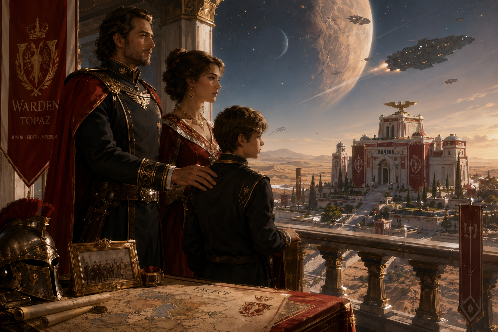
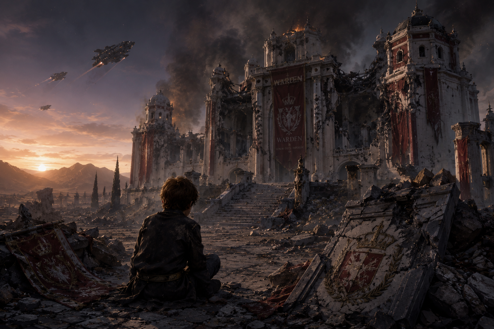
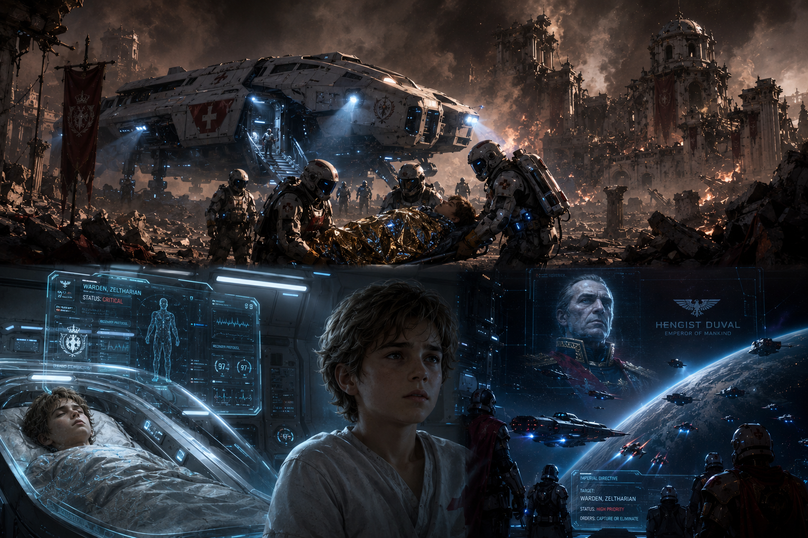
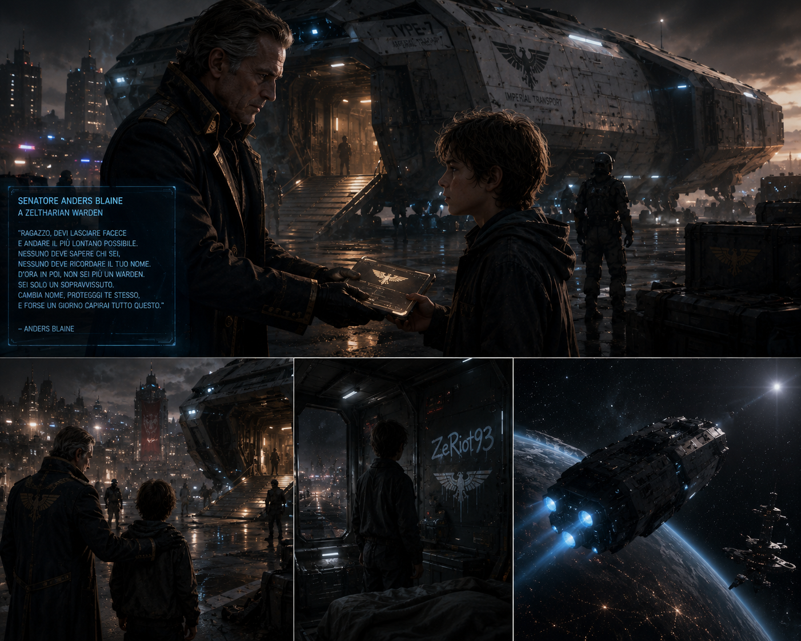
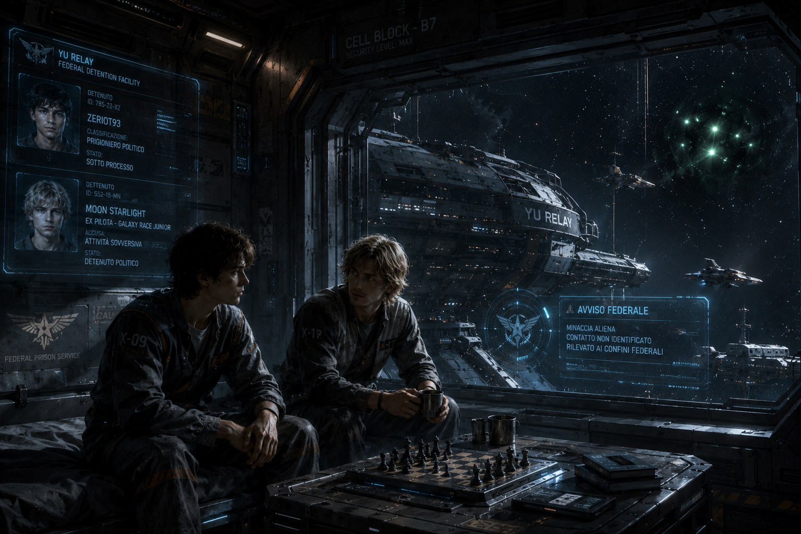
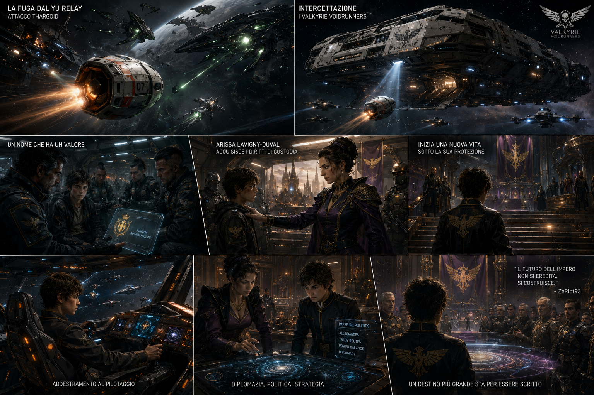

Storia di Zeltharian Warden
Le Origini - Nascita e Infanzia a Facece
Zeltharian Warden, conosciuto più tardi nella galassia come ZeRiot93, nacque il 14 settembre 3279 nel sistema di Facece, un angolo relativamente remoto dell’Impero, ma cruciale per la sua posizione strategica. Facece non era un centro di potere come le capitali imperiali, ma la sua vicinanza ai confini del dominio imperiale lo rendeva una regione importante, tanto per le rotte commerciali quanto per la difesa. A governare il sistema c’era Anders Blaine, un senatore dal potere consolidato, che aveva saputo navigare i complessi giochi di alleanze e rivalità imperiali. La sua leadership, seppur solida, non riusciva a eliminare del tutto le tensioni tra le fazioni in lotta per il controllo della zona. La famiglia di Zeltharian, i Warden, era ben inserita nella società di Facece, ma lontana dalle vette della nobiltà imperiale. La sua era una famiglia di antica tradizione, servitrice dell'Impero da generazioni, che aveva sempre mantenuto un equilibrio tra potere militare e diplomazia. Suo padre, Henry Warden, era il Conte di Topaz, un pianeta all'interno del sistema di Facece, un uomo rispettato e noto nel sistema per la sua carriera come commerciante e ufficiale militare dell’Impero. Dopo aver combattuto in numerose battaglie e servito con distinzione in vari teatri di guerra, Henry si era ritirato dalla carriera attiva e si era dedicato alla politica, dove era emerso come una figura chiave per il mantenimento degli interessi imperiali nel sistema. La sua esperienza nel commercio e nella politica lo aveva reso un alleato prezioso per Blaine, e la sua figura era quella di un uomo che sapeva come barcamenarsi tra gli intrighi del potere e la pragmatica necessità di mantenere l'ordine. La madre di Zeltharian, Leila Sullivan, proveniva da una famiglia di origini popolane, ma si era guadagnata il rispetto e la posizione sociale grazie alla sua astuzia e intelligenza. Leila era una donna dal carattere forte, che aveva avuto un impatto significativo sulla crescita di Zeltharian, impartendogli lezioni di resilienza e determinazione. Sebbene le sue radici fossero umili, Leila non aveva mai lasciato che la sua origine la definisse, riuscendo a farsi strada nel sistema aristocratico grazie alla sua straordinaria capacità di analisi e alla sua abilità nelle relazioni interpersonali. La sua influenza su Zeltharian fu profonda, insegnandogli l’importanza di restare fedele a se stessi, pur sapendo adattarsi alle circostanze in continua evoluzione. Henry e Leila, pur provenendo da mondi così diversi, avevano trovato un equilibrio nel loro matrimonio che aveva dato a Zeltharian una solida base su cui crescere. Sebbene suo padre fosse un uomo di rigide convinzioni e un forte senso dell’onore militare, Leila era più pragmatica, insegnando a suo figlio l'importanza di fare scelte giuste anche quando le circostanze erano avverse. Questa dualità formò la mente di Zeltharian, che fin da giovane capì che per avere successo nell’Impero, doveva combinare la forza della disciplina con la flessibilità dell'ingegno. La residenza dei Warden si trovava nel pianeta Topaz, all'interno del sistema di Facece, una magione imponente che sorgeva sulle colline che sovrastano il paesaggio desertico del pianeta. La struttura, dalla facciata bianca e rossa, era un chiaro simbolo dei colori della casata Warden, i quali rappresentavano sia la purezza e la determinazione (il bianco) che la forza e la passione (il rosso). La magione, un misto di eleganza e funzionalità, era il cuore pulsante della famiglia e del potere che essa esercitava nel sistema. Ogni angolo della casa era permeato da secoli di tradizione, con arazzi che raccontavano le gesta eroiche degli antenati e armature militari antiche che ornavano i corridoi, testimoniando l’impegno della famiglia nelle battaglie per l’Impero. Zeltharian visse in un ambiente dove l’ambizione non aveva confini. Suo padre lo preparava a diventare un uomo d’azione, un leader che sarebbe stato capace di comandare e difendere l’onore della famiglia. Leila, invece, gli trasmise la capacità di leggere la gente, di cogliere le sfumature nei discorsi e nelle alleanze, qualità che sarebbero state decisive nel corso della sua carriera. Da bambino, Zeltharian passava ore a osservare il padre, che si occupava degli affari legati alla sua contea e delle delicate operazioni politiche necessarie per mantenere la pace a Topaz. Sebbene fosse ancora troppo giovane per comprendere appieno la complessità del potere che il padre esercitava, sentiva la tensione e la determinazione che permeavano ogni sua azione. Anche se Topaz non era un centro nevralgico dell’Impero, era un luogo dove si respirava l’aria del potere imperiale, ma anche quella delle difficoltà quotidiane che una famiglia come quella dei Warden doveva affrontare. La famiglia era ben rispettata, ma l'influenza di Henry e Leila non bastava per far parte delle cerchie più alte della nobiltà, come quella della Casa Duval. Questo distacco dalle alte sfere imperiali non fece mai vacillare la determinazione di Zeltharian, che fin da giovane nutriva un sogno audace: cambiare l’Impero dall'interno, usando tanto la forza militare quanto la diplomazia. Zeltharian crebbe osservando il padre con ammirazione, ma anche con un senso di consapevolezza critica. La sua educazione era un equilibrio tra le aspettative tradizionali della sua famiglia e le aspirazioni personali di una carriera che, pur mantenendo il rispetto per la figura dell’Imperatore, avrebbe cercato di rinnovare e risollevare l’Impero stesso. Sognava un futuro in cui potesse combattere per la giustizia, non solo con la forza delle armi, ma anche con quella delle parole e delle azioni politiche. La sua formazione si svolgeva tra il rigoroso addestramento militare impartito dal padre e le acute osservazioni sulle dinamiche politiche che la madre gli insegnava, in particolare nei salotti dove i nobili si incontravano per discutere affari di stato. Nonostante fosse giovane, Zeltharian già comprendeva che l'arte del comando e quella della diplomazia non erano mai facili, e che la vera forza stava nel trovare il giusto equilibrio tra i due. Le difficoltà che la sua famiglia affrontava, il costante gioco di potere tra i vari settori del sistema, plasmarono il carattere di Zeltharian. Cresciuto in un ambiente che esigeva tanto dalla sua famiglia quanto da lui, il giovane Warden imparò fin da subito che l’onore era una moneta che valeva tanto quanto la forza, ma che senza astuzia politica, nulla sarebbe stato mai ottenuto. Il suo cammino era chiaro: avrebbe usato tutte le risorse della sua famiglia, la sua educazione e le sue capacità per risalire la gerarchia dell’Impero. Zeltharian era destinato a diventare un uomo di potere, ma per farlo doveva affrontare le sfide del suo ambiente, tra le tradizioni familiari e le lotte interne all’Impero. Topaz, pur non essendo il centro del potere, divenne il terreno su cui le sue ambizioni avrebbero preso forma. La sua infanzia, caratterizzata da una continua tensione tra la lealtà al proprio lignaggio e il desiderio di cambiare il sistema, sarebbe stata la base per la costruzione di una carriera che avrebbe un giorno cambiato il corso della storia dell’Impero. Con questi insegnamenti, il giovane Zeltharian iniziava a capire che il potere non si conquista solo attraverso la forza, ma anche attraverso la saggezza e la capacità di guardare oltre le convenzioni. La sua famiglia, pur distante dalle corti imperiali, gli offriva un terreno fertile su cui seminare i suoi sogni di giustizia e potere. E mentre cresceva, il futuro di Zeltharian si stava già scrivendo: il giovane nobile avrebbe imparato a manovrare nelle acque turbolente dell’Impero, pronto a lasciare un segno indelebile sulla storia.

La Tragedia - Attacco e Perdita della Famiglia
Nel 3286, quando Zeltharian aveva appena 7 anni, la sua vita venne stravolta da un evento tragico che segnò il destino della sua famiglia. Un attacco violento e devastante, orchestrato dai Pirati di Zeta Horologii, giunse improvvisamente sulla sua casa. Questa fazione, notoriamente violenta e ambiziosa, aveva seminato il terrore nei sistemi limitrofi, ma quella volta erano sotto il diretto incarico di un potente alleato all'interno dell'Impero: Hengist Duval, l’Imperatore stesso. Temendo che la crescente potenza e influenza della famiglia Warden, rinomata nel ramo del commercio e nelle forze militari, rappresentasse una minaccia diretta alla sua egemonia, Hengist Duval aveva segretamente ordinato l'eliminazione della famiglia per consolidare la sua posizione. La scelta di ingaggiare i pirati, lontani dal controllo diretto dell'Impero, aveva lo scopo di nascondere qualsiasi legame con l’alto impero, mantenendo la facciata di un attacco casuale. La residenza dei Warden, situata nel pianeta Topaz del sistema di Facece, una maestosa magione dalle pareti bianche e rosse che rappresentavano i colori della casata, fu invasa nel cuore della notte. La villa, simbolo di prestigio e potere, era costruita su una collina che dominava l'orizzonte del pianeta, con giardini rigogliosi e stanze decorate con dipinti di famiglia e oggetti d'antiquariato. Ogni angolo parlava di una dinastia che aveva conquistato il rispetto dell’Impero, eppure tutto ciò si sarebbe trasformato in polvere e cenere nel giro di poche ore. Henry Warden, il padre di Zeltharian, Conte di Facece e rinomato commerciante e militare imperiale, e Leila Sullivan, la madre, di origini popolane ma nobile nel suo spirito, furono assassinati con una crudeltà senza pari. Henry, che aveva visto crescere la sua casata tra le stelle, fu abbattuto nel suo studio, mentre Leila, che aveva sempre risolto i problemi con diplomazia e carisma, cadde a terra nel cuore della casa, dove aveva cresciuto i suoi figli. La loro morte, violenta e rapida, segnò la fine di una era. La famiglia Warden, simbolo della nobiltà di Facece, cadde in una notte senza pietà. Il giovane Zeltharian, colpito gravemente, fu lasciato per morto tra le macerie della sua casa distrutta. I pirati, venuti per compiere l'ordine di Hengist, non fecero prigionieri. Le grida di disperazione si mescolavano al fragore dei colpi di arma da fuoco e agli scoppi delle esplosioni che devastavano il palazzo. Ogni stanza, che una volta ospitava conversazioni lussuose e cene di gala, ora era ridotta a un campo di battaglia dove la vita era stata estirpata in un attimo. La magione, che un tempo era stata un simbolo di potenza e prestigio, era ora ridotta in un cumulo di rovine. I colori bianchi e rossi delle mura, che avevano raccontato una storia di onore, si fondevano con il fumo e le fiamme che avvolgevano l'edificio. Zeltharian giaceva in un angolo oscuro della sua dimora, la mente annebbiata dal dolore e dalla paura. La sua vista era annebbiata dal sangue che gli colava sugli occhi, ma il ragazzo sopravvisse, nonostante fosse gravemente ferito. Le urla dei suoi genitori echeggiavano nella sua mente, mentre il suo corpo non riusciva a comprendere la gravità della situazione. Non c'era più tempo per la disperazione; doveva sopravvivere, sebbene fosse consapevole che tutto ciò che conosceva fosse ormai perduto. Fu lasciato morire tra i rottami della sua casa, incapace di comprendere l'entità del disastro che si stava consumando intorno a lui. La mente di Zeltharian, frantumata dal trauma, si rifiutava di accettare la realtà: i suoi genitori erano morti, il suo mondo distrutto, e lui, a soli 7 anni, si trovava da solo, privo di ogni memoria, abbandonato in un destino oscuro. Quando i pirati lasciarono il sistema, non vi era traccia dell'infanzia che aveva conosciuto. La residenza dei Warden era ormai un cumulo di macerie fumanti, e il giovane Zeltharian rimase senza identità e senza passato. La sua mente, schiacciata dal dolore, si era svuotata di ogni ricordo, come se il suo stesso spirito fosse stato cancellato dall'immenso strazio. Ogni angolo della sua memoria era ora buio, un vuoto incolmabile che lo rendeva un estraneo a se stesso. Non c'era più nulla di ciò che aveva conosciuto, nulla che potesse riportarlo a una vita normale. In quel momento, la sua vita prese una piega definitiva. L’infanzia felice e serena che aveva conosciuto era ormai un ricordo lontano, e il futuro che lo attendeva era avvolto in una nebbia fitta e impenetrabile. Ogni speranza che il giovane Zeltharian aveva coltivato in quegli anni di infanzia sembrava dissolversi, come polvere al vento. La sua esistenza, che un tempo brillava tra le stelle dell'Impero, ora sembrava una macchia oscura, destinata a perdersi nelle infinite galassie. Senza memoria di chi fosse e senza alcuna traccia della sua famiglia, Zeltharian fu lasciato a vagare nel vuoto. Ogni passo che faceva, ogni respiro che prendeva, sembravano allontanarlo sempre più dal ragazzo che era stato. Non c'era più nulla di familiare: la sua casa, la sua famiglia, il suo nome erano scomparsi, e lui era solo un'ombra vagante in un universo ostile. La morte dei suoi genitori non era solo un dolore fisico, ma un annientamento dell'anima. Zeltharian si trovava ora in un cammino senza fine, senza direzione, una vittima del potere e della corruzione che avevano distrutto la sua vita. Ma il giovane Warden, pur essendo privo di memoria, non fu destinato a una fine semplice. La sua sopravvivenza, benché frutto di pura fortuna, segnò l’inizio di una nuova fase della sua esistenza. La tragedia che lo colpì segnò la fine della sua infanzia e l’inizio di un lungo cammino di ricerca di sé stesso, mentre il destino lo spingeva verso un futuro incerto. Quel futuro, purtroppo, non era solo il suo; il peso di quanto accaduto avrebbe influenzato il corso degli eventi che avrebbero plasmato il suo cammino e la galassia stessa. Le sue scelte future, forgiati nel dolore e nell'oscurità, sarebbero state le sue uniche armi in un universo che lo aveva abbandonato.

La Salvezza - Soccorsi e Nuovo Pericolo
Quando la devastazione culminò e la residenza dei Warden venne ridotta in rovine, il cielo sopra il pianeta Topaz rimase oscurato da nuvole dense di fumo e polvere. Un'aria densa di morte aleggiava sulle macerie di quella che un tempo era stata la residenza nobiliare dei Warden, un luogo simbolo di potere e influenza. Ma tra il caos e le fiamme, una flebile speranza si accese. I segnali di emergenza lanciati dal sistema di sicurezza della magione si diffusero rapidamente, un ultimo grido di aiuto che raggiunse orecchie altrimenti indifferenti. La tragedia era evidente, ma qualcuno stava per rispondere. La piccola unità di soccorso imperiale che ricevette il segnale era solitamente impiegata in situazioni ben meno gravi. Era un gruppo di specialisti che operavano in scenari meno drammatici, ma che in quel momento si trovò a fronteggiare una calamità ben più grande di quanto avessero mai affrontato. Nonostante la forza devastante dell'attacco subito dalla residenza, gli operatori arrivarono con precisione, le loro navi atterrarono tra le rovine in un luogo che, fino a pochi istanti prima, aveva rappresentato una delle case più rispettabili e rispettate dell'Impero. Il fumo che ancora avvolgeva la zona e il fragore dei resti che crollavano non riuscivano a fermare la loro determinazione. Nonostante le condizioni disperate, riuscirono a individuare Zeltharian tra le macerie. Il corpo del giovane era gravemente ferito e il suo respiro era affannoso, segno di una vita che stava svanendo lentamente. Gli operatori non persero tempo e, con sforzi sovrumani, riuscirono a stabilizzarlo temporaneamente. Le sue ferite erano troppo gravi, ma il coraggio di quelle mani esperte che lo trattavano con cura gli diede una possibilità, per quanto minima. Il giovane fu trasportato d'urgenza a bordo di una nave medica imperiale, diretta verso l'avamposto di Topaz, un ospedale ben attrezzato ma che, neanche lontanamente, avrebbe potuto comprendere la profondità del trauma subito da quel ragazzo. Zeltharian giaceva tra le braccia dei soccorritori, privo di sensi e con il corpo martoriato. I medici lo accolsero nell'ospedale con l’angoscia di chi sa di avere davanti a sé una sfida impossibile. Le sue cicatrici fisiche furono trattate con la massima attenzione, ma ben presto si resero conto che non sarebbe stato solo il corpo a dover guarire. Il giovane, oltre alle gravi ferite fisiche, aveva subito un trauma psicologico talmente profondo da cancellare ogni traccia della sua identità. La sua mente, scossa dall’inferno che aveva appena vissuto, non era più capace di tenere alcun ricordo. I suoi genitori, la sua casa, la sua vita: tutto svanì, annientato dal colpo inferto dal destino. Quando si svegliò, il vuoto lo circondava. Non sapeva chi fosse, né perché fosse lì, né tanto meno cosa fosse accaduto. Il giovane, ora senza memoria, passò un anno intero in un limbo tra la vita e la morte. Le sue ferite fisiche, pur dolorose, lentamente si rimarginarono. I medici, nonostante la situazione critica, avevano fatto tutto il possibile per salvarlo, ma il vero campo di battaglia era la sua mente. Un anno intero passò senza che la nebbia nella sua memoria si dissolvesse, lasciandolo senza passato, senza storia. Ogni giorno trascorso in quella condizione divenne un passo lontano dalla persona che era stato. Il giovane che si trovava nell'ospedale di Topaz non era più un Warden, non era più un figlio, un erede, ma un ragazzo senza identità che cercava di ricostruire ciò che gli era stato strappato. Ma mentre lui lottava per rimettersi in piedi, nel cuore dell'Impero si diffondeva una notizia che avrebbe cambiato ancora una volta il corso della sua vita. Un membro della famiglia Warden era sopravvissuto. La sopravvivenza di Zeltharian, sebbene privo di memoria, rappresentava una minaccia incombente per il potere dell'Imperatore Hengist Duval. La morte della famiglia Warden doveva essere definitiva, il suo annientamento totale. Hengist non si sarebbe fermato di fronte a nulla per garantire che la casa dei Warden non potesse mai più rivendicare un potere che avrebbe potuto minare la sua ascesa. L’Imperatore temeva che, se Zeltharian fosse mai venuto a conoscenza della sua eredità, avrebbe potuto diventare il simbolo di una rivalsa, un leader che avrebbe potuto minare il suo dominio sull'Impero. E così, la caccia ebbe inizio. Hengist Duval emise un ordine di cattura. Un mandato che non solo stabiliva una taglia su Zeltharian, ma che inviava anche un messaggio chiaro: l'Impero non avrebbe tollerato la sopravvivenza di un erede dei Warden. Con la stessa rapidità con cui l’Imperatore muoveva le sue pedine, le forze imperiali furono mobilitate, affiancate da cacciatori di taglie esperti e ben armati. Zeltharian, ormai completamente ignaro delle sue origini, divenne il bersaglio di un'incessante caccia. Ogni suo movimento, ogni angolo in cui si sarebbe potuto nascondere, era osservato, scrutato da occhi che non avrebbero avuto pietà. Il giovane, ora senza memoria e senza alcuna consapevolezza del pericolo che lo minacciava, si ritrovò intrappolato in una rete che si stringeva sempre di più intorno a lui. Ma per lui, la caccia non era solo una questione di sopravvivenza fisica. Non ricordava chi fosse, ma la consapevolezza che qualcuno lo stava cercando, e che lo cercava per eliminarlo, lo spinse a compiere il suo primo vero atto di resistenza. Il destino lo aveva già privato di tutto ciò che aveva conosciuto, ma ora gli stava dando una nuova chance, una possibilità di riscrivere il proprio cammino. Ma Zeltharian non sapeva ancora che la sua corsa contro il tempo non riguardava solo il suo futuro. La sua sopravvivenza avrebbe potuto cambiare il corso della storia galattica. L'Impero stava cercando di cancellarlo, di distruggere ogni traccia della sua famiglia, eppure, in qualche modo, lui era ancora lì. In quel momento, la sua esistenza, il suo spirito, la sua forza interiore non erano più legati a un nome o a un titolo. Zeltharian era diventato l'ultimo testimone di una casa distrutta, eppure, in qualche modo, il suo destino non era ancora segnato. Il suo viaggio, segnato dalla tragedia e dalla perdita, si stava appena iniziando.

La Fuga - L'Intervento di Anders Blaine
Topaz, un pianeta che aveva visto mille storie intrecciarsi tra le sue strade e le sue luci al neon, stava per essere il teatro di una fuga che avrebbe cambiato il destino di un uomo. Non tutti nell'Impero erano accecati dalla visione di Hengist Duval; alcuni ancora cercavano di proteggere la verità, di salvare ciò che restava di giusto in una galassia che stava diventando sempre più corrotto. Anders Blaine, senatore di grande influenza, non condivideva le ambizioni di Hengist, e quando venne a conoscenza del destino di Zeltharian, il giovane Warden intrappolato tra le grinfie di un regime senza pietà, capì che il suo intervento era necessario. La mente di Blaine era fredda e lucida, l'esperienza acquisita nel corso degli anni gli permetteva di tessere le sue mosse come un abile giocatore di scacchi. L’informazione che aveva ricevuto era chiara e tragica: Zeltharian, un innocente nelle mani di un sistema marcio, era stato destinato alla morte, vittima di una manovra politica orchestrata da Hengist Duval. La sua esistenza era ormai solo una pedina sacrificabile in un gioco più grande. Blaine non era disposto ad accettare il risultato di quella partita, e l'idea di permettere che il giovane venisse eliminato senza dare a lui una possibilità di lotta lo infuriava. La sua fede nell'Impero non si basava su un sistema che umiliava e distruggeva, ma su un ordine che, pur nella sua severità, doveva proteggere i deboli. L’Imperatore e le sue mire, invece, erano altro: corruzione e tirannia. E questa volta, Blaine non sarebbe rimasto a guardare. Il senatore utilizzò tutte le sue risorse, tutti i contatti che aveva accumulato in anni di carriera, per raccogliere informazioni vitali e organizzare la fuga di Zeltharian. Non era il tipo di uomo che avrebbe agito in pubblico o con rumore; no, ogni passo doveva essere silenzioso, perfetto, calcolato. Con un gesto deciso, Blaine convocò una rete di operativi fidati, specialisti in travestimenti e infiltrazioni, affinché potessero assisterlo nell'esecuzione di una fuga impeccabile. L’operazione si svolse lontano dalle luci della città e dalle pattuglie imperiali. Nella quiete di una piattaforma di carico isolata, l'attesa di una partenza senza ritorno era palpabile. Blaine non esitò. Quella era l’unica chance che Zeltharian avrebbe avuto di sopravvivere e, forse, di trovare la sua redenzione. Ma non sarebbe stato facile. Il giovane, ancora privo di memoria, non comprendeva appieno il pericolo che stava affrontando. Mentre il Type-7 da trasporto veniva caricato e preparato, il senatore si voltò verso Zeltharian, il suo volto segnato dal peso di una decisione irrevocabile. Non c’era tempo per spiegazioni, né per ripensamenti. Le parole che avrebbe detto sarebbero state le uniche che Zeltharian avrebbe avuto per iniziare il suo nuovo cammino. "Ragazzo, devi lasciare Facece e andare il più lontano possibile. Nessuno deve sapere chi sei, nessuno deve ricordare il tuo nome. D’ora in poi, non sei più un Warden. Sei solo un sopravvissuto. Cambia nome, proteggi te stesso, e forse un giorno capirai tutto questo." Le parole di Blaine erano dure, ma necessarie. La verità sarebbe arrivata, ma non in quel momento. La sua mente si era distillata in un senso di urgenza, e la verità doveva aspettare. Blaine porse un datapad a Zeltharian. Conteneva crediti sufficienti per dargli una possibilità. Non c’erano dolci parole, solo la realtà nuda e cruda: Zeltharian doveva fuggire, e per farlo doveva rinunciare a tutto ciò che aveva mai conosciuto. "Prendi questo. Non guardare indietro. La tua vita comincia ora, ma non sarà mai più la stessa." Con uno sguardo grave, il senatore spinse Zeltharian verso il Type-7, il velivolo che avrebbe sollevato il giovane verso il cielo e lo avrebbe allontanato per sempre da Facece. Le luci della città sbiadivano, e con esse ogni legame, ogni ricordo di un passato che non avrebbe mai più potuto reclamare. Il cargo decollò lentamente, lasciando la superficie di Topaz sotto di sé. Zeltharian, ancora perplesso, si appoggiò al muro del veicolo, sentendo il ruggito del motore mentre l'atmosfera veniva attraversata. La sua casa, la sua vita, erano ormai solo un ricordo distante. Il futuro? Incerto e spaventoso. Ma non c'era scelta, solo l'oscurità dello spazio aperto e la consapevolezza che il passato era ormai un peso troppo grande da portare. Con l’ombra di Topaz che svaniva lentamente dietro di lui, Zeltharian si trovò immerso nell’immensità dello spazio. La sua mente vagava, tentando di afferrare qualcosa che gli desse un senso, ma i ricordi erano sfocati, come sogni dimenticati appena svegli. La sua identità era un mistero, una pagina bianca sulla quale non era mai stato scritto nulla. Mentre il Type-7 volava verso l'ignoto, la solitudine lo avvolgeva. Non c'erano risposte, solo il vuoto interstellare che sembrava rispecchiare il buio che regnava nella sua mente. La sua vita, quella che aveva avuto, non esisteva più. Non c'erano genitori, amici, legami. Non c'era nulla. Solo la consapevolezza che l'Impero lo stava cercando, che Hengist Duval voleva eliminarlo. Le parole di Blaine rimbombavano dentro di lui, ma non avevano ancora trovato posto nella sua anima. Non era più un Warden, ma chi era davvero? In quella vastità, l’unica cosa che gli restava era la sua stessa sopravvivenza, un concetto che ora comprendeva pienamente. Il tempo passava, e con esso, la necessità di reinventarsi si faceva sempre più urgente. Fu così che, lontano da Facece e dalla sua storia, Zeltharian decise. Adottò un nuovo nome, uno che risuonava nel suo cuore come un manifesto di lotta e di rinascita. "ZeRiot93." Il numero "93" era un enigma, ma "ZeRiot" lo faceva sentire vivo. Era come una fiamma che bruciava dentro di lui, un simbolo di ribellione contro un destino che aveva cercato di annientarlo. Non avrebbe accettato di essere dimenticato. Non sarebbe stato solo un altro sopravvissuto nell’ombra. Avrebbe lottato per la sua verità. Il viaggio continuava, e con esso, la solitudine e il peso della sua scelta. Ma ora, nel profondo di se stesso, Zeltharian, o meglio, ZeRiot93, sentiva che il suo cammino non sarebbe stato solo una fuga. Era una ricerca, una corsa verso una verità che, pur sfuggente come la luce di una stella lontana, avrebbe un giorno trovato la sua strada nel buio dell’universo.

Prigionia - Sopravvivenza nel Yu Relay
Dopo la sua fuga da Facece, ZeRiot93 vagò tra i sistemi periferici, cercando di mantenere un profilo basso. La sua libertà, però, fu breve. Catturato da un gruppo di cacciatori di pirati federali, fu portato al Yu Relay, una stazione-carcere orbitale ai confini dello spazio federale. Qui, i prigionieri politici venivano trattati come pedine in un gioco di potere tra la Federazione e l'Impero. La stazione, in apparenza una struttura di detenzione, era molto più di questo: un luogo dove gli stessi prigionieri diventavano merce di scambio in manovre politiche e militari. Le condizioni di vita nel Yu Relay erano spaventose: violenza, fame e abusi erano all'ordine del giorno. Ogni prigioniero doveva affrontare quotidianamente torture fisiche e psicologiche, cercando di sopravvivere nelle brutali dinamiche interne della prigione. La struttura stessa della stazione favoriva una costante lotta per la sopravvivenza, dove i più deboli erano destinati a soccombere. ZeRiot93 si adattò presto, sviluppando una determinazione implacabile a non soccombere. La sua sopravvivenza non dipendeva solo dalle sue abilità, ma dalla sua capacità di rimanere un passo avanti, di non cedere mai alla disperazione che permeava quel posto. L’unica speranza era l’improvvisa opportunità di fuggire, qualcosa che sembrava lontana, ma non impossibile. Nel tempo trascorso nella stessa cella, incontrò Moon Starlight, un ex pilota delle Galaxy Race Junior, arrestato per un intrigo politico legato a corruzione e macchinazioni tra la Federazione e Zachary Hudson. Nonostante la prigionia, tra i due nacque una connessione profonda, quasi fraterna. Non erano amici nel senso tradizionale del termine, ma si rispettavano come se fossero sopravvissuti insieme a una guerra silenziosa. La prigione, con la sua violenza e disperazione, aveva forgiato tra loro un legame indissolubile, fatto di sguardi e parole non dette, ma sempre comprensibili. Non servivano grandi dichiarazioni per sentirsi uniti. Ogni giorno nella cella era una conferma che la loro resistenza non era una questione individuale, ma un modo di affrontare la brutalità di quel posto insieme. La vita nella prigione era un susseguirsi di giornate grigie, scandite solo dal rumore metallico delle porte che si aprivano per portare cibo o punizioni, e dalle scariche elettriche che segnavano il ritmo di ogni resistenza o ribellione. ZeRiot93 si era ormai adattato a tutto questo, ma c'era qualcosa di diverso nella sua prigionia, qualcosa che lo rendeva determinato a non cedere alla disperazione. Moon, da parte sua, era un elemento che aggiungeva una motivazione in più. Con i suoi ricordi delle competizioni nelle Galaxy Race Junior e il suo spirito indomito, Moon non si era mai completamente arreso, anche quando la violenza della prigione aveva cercato di abbatterlo. Nel 3291, la stazione fu improvvisamente attaccata dai Thargoid, una razza aliena che stava intensificando gli attacchi contro l'umanità. Le luci si spensero e il caos esplose in ogni angolo del Yu Relay. Le sirene suonavano incessantemente, i prigionieri correvano disperati cercando rifugio. La paura era palpabile, ma non era il momento di cedere alla disperazione. Il rumore metallico dei colpi dei Thargoid che facevano tremare le pareti sembrava rendere tutto ancora più irreale. La prigione, già di per sé un incubo, si trasformava in un vero e proprio campo di battaglia. Le strutture della stazione tremavano sotto gli impatti, mentre le esplosioni scuotevano l'edificio. ZeRiot93 e Moon, in quel momento, capirono che la prigione non era più il loro unico nemico. Il caos e la morte provenivano da un nemico più grande, più minaccioso. Il tempo per agire era arrivato. Con uno scambio rapido di sguardi, senza parole, entrambi corsero verso i rispettivi escape pod, l'unica via di salvezza. Non c'era più tempo per pianificare o pensare a strategie. L'adrenalina aveva preso il sopravvento. La decisione di fuggire era ormai una questione di sopravvivenza. “Buona fortuna,” si dissero in un mormorio, ma quelle parole non avevano bisogno di essere pronunciate. Erano legati da una comprensione mutua che andava oltre le parole, oltre la paura. Le esplosioni lontane facevano vibrare le pareti, mentre il rumore metallico dei colpi Thargoid si avvicinava sempre di più. ZeRiot93 si infilò nel pod, mentre Moon, con un movimento rapido, prese il suo. Non c’era bisogno di chiedersi cosa sarebbe successo, solo di agire. Non c'era spazio per la paura, solo per il rispetto reciproco. Appena saliti, l'escape pod si staccò dalla stazione, ma un’esplosione li scosse, destabilizzando la partenza. Un colpo preciso di un cacciatore Thargoid aveva danneggiato il sistema di propulsione del pod di ZeRiot93, mandandolo in stallo. Le vibrazioni metalliche aumentavano, il pod era fuori controllo, ma ZeRiot93 non si perse d’animo. Con un rapido intervento, riuscì a ripristinare la rotta e a fare partire il pod. La sua mano tremava leggermente, ma la determinazione a sopravvivere lo sorresse. La velocità della fuga, nonostante l’apparente caos, divenne l’unica certezza. Non c'era spazio per esitazioni: doveva uscire da quella zona di pericolo. Quando finalmente il pod si lanciò nello spazio, le esplosioni dalla stazione si susseguivano, e l’ombra della prigione esplodeva dietro di lui. La rotta stabilizzata, nonostante la pressione dei Thargoid, lo portò lontano, verso il vuoto dello spazio. Ma la loro corsa non era finita. I Thargoid li avevano notati, e l'inseguimento era già in atto. ZeRiot93 accelerò, cercando di guadagnare terreno. La stazione ormai alle sue spalle, lui e Moon erano finalmente liberi, ma non fuori pericolo. Nonostante la traiettoria di fuga fosse stata settata correttamente, i Thargoid non sembravano intenzionati a mollare la presa. Le loro navi, sempre più vicine, sembravano volersi vendicare di quel tentativo di fuga. ZeRiot93, con la mente lucida nonostante la fatica, analizzò rapidamente la situazione. Si trattava di un gioco di nervi e abilità, ma ormai era troppo tardi per tornare indietro. Mentre la distanza tra i loro escape pod cresceva e il contatto radio si interruppe, ZeRiot93 non sentiva il bisogno di comunicare con Moon. L’idea di rimanere concentrato sulla propria sopravvivenza era l'unico pensiero che lo occupava. Il resto sarebbe stato lasciato al caso e al destino. La lotta per la libertà era appena iniziata.

Il Miracolo della Fuga - Attacco Thargoid e Destino Imperiale
Dopo la drammatica fuga dal Yu Relay, il destino di Zeltharian sembrava segnato. Abbandonato a se stesso, senza risorse e con l'orrore di un futuro incerto, si trovò a vagare nel buio più profondo dello spazio. A bordo del suo escape pod, la solitudine lo assaliva, ma la sua determinazione, forgiata nelle sofferenze del passato, gli impediva di arrendersi. Ogni giorno che trascorreva nell'oscurità, la paura cresceva, ma il giovane non si lasciava sopraffare. I suoi pensieri erano rivolti a un unico obiettivo: la sopravvivenza. Ma la sorte, come già accaduto in passato, gli riservò una nuova occasione. Un'opportunità che sarebbe arrivata sotto forma di mercenari. La nave di una banda di mercenari indipendenti, i Valkyrie Voidrunners, intercettò il suo pod. Conosciuti per le loro operazioni fuori legge, questi uomini e donne senza scrupoli vagavano per i confini dello spazio, dove la legge era una mera formalità e il guadagno era l'unica preoccupazione. Dopo aver trovato il ragazzo, i Valkyrie Voidrunners si trovarono davanti a una scelta difficile. L'idea di risparmiare Zeltharian sembrava inizialmente poco vantaggiosa: un bambino, solo, senza armi e apparentemente senza valore. Tuttavia, l'opportunità si fece chiara quando scoprirono dei documenti parziali che lo legavano all'Impero. In un istante, l’interesse dei mercenari cambiò: Zeltharian non era solo un ragazzo smarrito nello spazio profondo, ma un potenziale strumento per ottenere un guadagno considerevole. La decisione fu rapida: avrebbero portato il giovane nel cuore dell’Impero, nel sistema di Achenar, dove avrebbero potuto venderlo a una delle famiglie aristocratiche più potenti come schiavo. A soli dodici anni, il destino di Zeltharian sembrava essere segnato dal dolore e dalla schiavitù. Eppure, la sua forza interiore non passò inosservata. Nelle dure condizioni in cui si trovava, il suo spirito non si piegò mai. Fu proprio la sua resilienza a suscitare l’attenzione di Arissa Lavigny-Duval, una delle figure più potenti dell’Impero, la cui visione politica e sociale era rinomata per la sua lungimiranza e ambizione. Arissa, che da sempre cercava individui con potenziale straordinario, riconobbe in Zeltharian qualcosa che nessun altro vedeva. In lui, intravide un'opportunità unica: una mente brillante, capace di grandezza, ma ancora forgiante nelle fiamme della sofferenza. Decise così di acquistarlo, liberandolo dal destino di schiavo e offrendogli una vita sotto la sua protezione. La scelta di Arissa non fu solo una questione di pietà, ma una mossa strategica. Era convinta che Zeltharian potesse diventare una figura importante, non solo per la sua casa, ma per l'intero Impero. Iniziò così un periodo che avrebbe cambiato per sempre il destino del giovane. Sotto la guida della potente aristocratica, Zeltharian ricevette un'educazione che avrebbe sorpreso chiunque. Non solo venne addestrato nelle arti del combattimento, dove dimostrò una naturale abilità nel maneggiare armi e navi, ma anche nelle sofisticate tecniche della diplomazia, del commercio e delle politiche imperiali. Ogni lezione, ogni momento passato a studiare le intricate dinamiche della corte imperiale, contribuiva a modellare il ragazzo in un giovane astuto e determinato. Laddove altri avrebbero ceduto alla fatica, Zeltharian si adattava, utilizzando la sua resilienza, forgiata in anni di tormento, per imparare e crescere. In poco tempo, divenne un osservatore acuto del potere che permeava l’Impero. Comprendeva la politica che si celava dietro le cortine di lusso delle famiglie aristocratiche, le alleanze e le faide che alimentavano la macchina imperiale. I suoi sogni di vendetta, nati dal suo passato e dal tradimento subito, iniziarono a intrecciarsi con le sue ambizioni politiche. Fu proprio questa combinazione di desiderio di riscatto e saggezza acquisita a renderlo un attore perfetto nel gioco di potere dell’Impero. La sua ascesa, tuttavia, non fu priva di difficoltà. Ogni passo che compiva nei corridoi scintillanti e nelle sale buie dell'aristocrazia era costellato di insidie, manovre politiche e minacce di tradimento. Ma Zeltharian, forgiato dalla sua giovinezza turbolenta, affrontò ogni sfida con freddezza e determinazione. La corte imperiale, che inizialmente lo aveva visto come un semplice schiavo, presto cominciò a temerlo, riconoscendo in lui una forza che sarebbe potuta crescere fino a diventare una potenza in grado di riscrivere il destino dell’Impero. Mentre la sua posizione all'interno della corte cresceva, così cresceva anche il suo desiderio di cambiare le sorti di un Impero che aveva sempre visto come ingiusto e corrotto. Sapeva che la vendetta sarebbe stata la sua motivazione principale, ma man mano che il suo potere cresceva, comprese che il vero strumento di cambiamento risiedeva nel controllo delle leve politiche e militari che definivano il destino dell’Impero. Non era solo la sua mente brillante che lo rendeva un uomo temibile, ma anche la sua capacità di vedere oltre le apparenze, di navigare nelle acque tumultuose della politica imperiale con una sicurezza che solo pochi potevano vantare.

Emergenza di un Leader - Coraggio e Determinazione
Nel 3294, a soli quindici anni, Zeltharian si trovava ad affrontare sfide che avrebbero messo alla prova anche gli adulti più esperti. Nonostante la sua giovane età, il suo passato da prigioniero, le sue sofferenze e la sua resilienza lo avevano forgiato, trasformandolo in un giovane determinato e carismatico. La sua figura non passò inosservata all’interno dell’Impero, dove l’esperienza sul campo e il sangue freddo acquisito in situazioni di pericolo lo resero una risorsa preziosa. La sua ascesa iniziò durante un'esercitazione di simulazione militare. Zeltharian, che si trovava sotto il comando di ufficiali esperti, stava partecipando a una simulazione di difesa a bordo di un Type-10 Defender. L’esercitazione era programmata come un’attività di routine, destinata a testare la prontezza dei cadetti nell’affrontare situazioni di combattimento. Ma quella che doveva essere una semplice simulazione si trasformò improvvisamente in un attacco reale. I sistemi di allerta vennero attivati, e in pochi istanti la simulazione venne invasa da un drappello di navi nemiche in agguato, coordinate da pirati o da forze imperiali rivali. I cadetti, impreparati, furono presi dal panico, e molti cominciarono a disobbedire agli ordini, spinti dalla paura e dalla confusione. Alcuni cercarono di fuggire, altri di nascondersi, ma Zeltharian rimase lucido, analizzando velocemente la situazione. In quel momento, il giovane, pur non avendo l’autorizzazione, si gettò nella mischia. Il giovane fece quello che molti dei suoi superiori avrebbero esitato a fare: prese il controllo del Type-10 Defender e scatenò un’offensiva decisa contro le navi nemiche, lanciando una serie di manovre esperte e precise. A differenza di altri cadetti, il suo istinto lo portò a comprendere che l’unica possibilità di vittoria stava nell’affrontare il nemico con determinazione e velocità. La sua audacia e la sua decisione spiazzarono i compagni e gli ufficiali presenti. Non solo stava affrontando un attacco che avrebbe potuto compromettere la sua carriera, ma lo stava facendo con una maestria che sorprese anche i veterani. La sua visione strategica si manifestò in ogni mossa: avvicinò la nave nemica per ingaggiare il combattimento, approfittò dei punti deboli delle navi rivali e utilizzò l’ambiente circostante come parte della sua tattica. Zeltharian non si limitò a difendere la propria nave, ma si preoccupò anche di coordinare i movimenti degli altri cadetti. In un rapido scambio di comunicazioni, organizzò la formazione difensiva, spingendo i compagni a rimanere uniti. Sebbene l’esercitazione fosse stata pensata per testare la prontezza individuale, lui fece capire che la forza del gruppo era ciò che avrebbe permesso loro di prevalere. Si muoveva con il vigore di un comandante esperto, il suo coraggio instillava un senso di speranza nei cuori dei cadetti. Nonostante il suo successo nel respingere gli attaccanti e nel proteggere il resto della squadra, il suo gesto non passò inosservato ai suoi superiori. Fu immediatamente richiamato per un colloquio, dove si prevedeva una severa punizione per la sua azione avventata. Tuttavia, il risultato della missione fu incontestabile: i pirati erano stati respinti e la simulazione era stata vinta grazie alla sua azione decisiva. Il comandante responsabile della simulazione, un ufficiale di alto rango, lo guardò con ammirazione. "Hai agito senza paura, ma non senza testa", gli disse, ammettendo che la sua visione strategica aveva avuto la meglio. Il suo gesto, sebbene audace, aveva salvato non solo la simulazione ma anche la reputazione di tutta la squadra. Quella giornata, pensò Zeltharian, sarebbe stata una delle tante che gli avrebbero insegnato che ogni vittoria ha un prezzo, e che ogni rischio andava misurato con saggezza. La severa reprimenda che seguì non intaccò la sua determinazione, anzi, lo rafforzò. Quel gesto non solo guadagnò il rispetto dei suoi pari, ma segnò l’inizio di una lunga carriera nella quale Zeltharian divenne una figura di riferimento. La sua capacità di affrontare il pericolo, di mantenere la calma sotto pressione e di pensare a lungo termine lo portarono a emergere come un leader naturale, capace di farsi ascoltare e rispettare. Con ogni passo che compiva, guadagnava consensi tra gli altri cadetti e tra i suoi superiori, che riconobbero in lui una rara qualità di leadership, che non dipendeva dall’età o dall’esperienza, ma dalla sua indomita volontà e dalla sua straordinaria intuizione tattica. L’incidente con la simulazione divenne il suo biglietto d'ingresso nel mondo delle alte sfere dell’Impero. Le voci della sua bravura si diffusero rapidamente, raggiungendo orecchie più potenti. Seppur giovane, la sua abilità di pensare e agire sotto pressione aveva dato una nuova speranza all’Impero, che stava cercando giovani leader che potessero contrastare le minacce interne ed esterne. Nei mesi successivi, gli vennero affidati incarichi sempre più complessi, dalle operazioni di sorveglianza su pirati spaziali a missioni diplomatiche delicate. Ogni incarico gli permise di affinare la sua strategia e di comprendere meglio le dinamiche interne dell’Impero, un mondo complesso e intricato, dove la lealtà, la potenza e la politica si intrecciavano in modo inestricabile. Zeltharian iniziò a capire che non si trattava solo di sconfiggere nemici, ma di sapere quando e come allearsi, di sfruttare le debolezze politiche senza compromettere il proprio potere. Con ogni missione, acquisiva più influenza e si guadagnava la fiducia di alcuni degli ufficiali imperiali di alto rango. Divenne uno di loro, ma mantenne sempre una certa distanza. Nonostante fosse un uomo di potere, non si lasciò mai intrappolare completamente dal sistema. Sotto la guida della sua mente acuta, le forze imperiali che lo avevano accolto iniziarono a vedere i frutti di questa giovane leadership, riconoscendo che Zeltharian non era solo un ragazzo che aveva superato le sue difficoltà, ma una figura destinata a cambiare il destino dell’Impero. La sua strada, già intrapresa, lo portava sempre più vicino alla cima, dove il potere e la politica si intrecciavano, e dove sarebbe stato chiamato a fronteggiare nuove sfide e opportunità. Zeltharian, ora consapevole della grande responsabilità che si era assunto, iniziò a guardare al futuro con una determinazione incrollabile. Ogni nuova sfida lo preparava per quella che sarebbe stata la battaglia finale per il destino dell’Impero, una battaglia che avrebbe messo alla prova non solo le sue capacità strategiche, ma anche il suo coraggio, la sua moralità e la sua lealtà.
I PEG - Formazione di un Team di Elite
A soli 18 anni, Zeltharian ricevette un incarico che avrebbe cambiato il corso della sua vita. La sua ascesa, infatti, non si fermò alla protezione di Arissa Lavigny-Duval, ma lo portò a un ruolo ancora più importante e pericoloso: la guida del Phoenix Elite Group (PEG), un'unità segreta d’élite dell’Impero, composta dai migliori agenti imperiali, scelti per le loro capacità uniche e per la loro lealtà incrollabile. Il PEG non era un gruppo comune: operava nell’ombra, svolgendo missioni ad altissimo rischio, spesso al di fuori dei confini della legge imperiale e, talvolta, anche ignote alle autorità imperiali stesse. Il team di Zeltharian si componeva di individui altamente specializzati, ognuno con un talento specifico che lo rendeva perfetto per le operazioni più delicate. Tra i membri del PEG, spiccavano le seguenti figure: Moon Starlight: un esperto di combattimenti atmosferici, con una reputazione leggendaria nel settore. La sua abilità nel manovrare in ambienti atmosferici e nello spazio aperto lo rendeva una risorsa inestimabile per il gruppo. La sua storia personale, però, era altrettanto interessante: come Zeltharian, anche lui era stato catturato e trasportato ad Achenar, ma la sua carriera prese una piega diversa. Originario della sezione "schiavi politici federali", Moon Starlight aveva vissuto un'esperienza simile a quella di Zeltharian, ma sotto una condizione di cattività molto diversa. Nonostante il suo passato traumatico, Moon divenne uno degli agenti più leali e temuti del PEG, capace di affrontare ogni missione con una determinazione glaciale. Liyah Mooney: discendente di una delle famiglie più potenti della società bancaria terrestre del 2020, Liyah era una pilota d’élite, esperta nell'affrontare combattimenti aerei estremamente complessi. La sua abilità nelle manovre evasive e nel combattimento ravvicinato la rendeva una delle più pericolose nel suo campo. Il suo legame con la vecchia nobiltà terrana la rendeva anche una risorsa diplomatica in alcune missioni, soprattutto in quelle che richiedevano una precisione tattica unita a una conoscenza approfondita delle dinamiche politiche tra le fazioni. Flora Flowers: un'assoluta esperta nelle operazioni di combattimento ravvicinato, Flora era specializzata in missioni su terreno ostile o a bordo di navi nemiche. Addestrata in una vasta gamma di tecniche di combattimento corpo a corpo, aveva anche una straordinaria abilità nell’utilizzo di armi bianche e tecnologiche, tanto che veniva spesso impiegata per operazioni particolarmente pericolose dove ogni errore poteva significare la morte. Flora aveva un profondo senso del dovere e una resistenza mentale che la rendeva una leader naturale in situazioni di crisi. Dagger: un maestro nell'intelligence e nel sabotaggio, Dagger era un esperto infiltrato, capace di entrare nelle strutture nemiche senza lasciare traccia. Il suo compito era spesso quello di minare le operazioni nemiche dall'interno, sabotando risorse vitali e raccogliendo informazioni cruciali. Dagger possedeva un’intelligenza acuta e una capacità di analizzare i punti deboli dei nemici che gli permetteva di portare a termine missioni di sabotaggio con una precisione letale. Sotto la guida di Zeltharian, il Phoenix Elite Group divenne un'unità temuta e rispettata in tutto l'Impero. Le missioni che intraprendevano erano tanto pericolose quanto strategiche, comprendendo obiettivi cruciali come: L’eliminazione di figure chiave nelle fazioni rivali, per destabilizzare il nemico e abbattere le resistenze politiche. Il disarmo di reti di corruzione che minavano la stabilità interna dell’Impero, permettendo alle fazioni rivali di guadagnare terreno. L’attuazione di manovre politiche per minare il potere degli avversari, destabilizzando le alleanze e favorendo gli interessi imperiali. Le operazioni erano tanto precise quanto letali, e la velocità con cui il PEG agiva faceva sì che i nemici non avessero il tempo di reagire. Tuttavia, l’efficacia del gruppo era tale che solo Arissa Lavigny-Duval conosceva la vera natura del PEG. Usandolo come un’arma invisibile, lo impiegava in missioni altamente sensibili per mantenere l’equilibrio dell’Impero, assicurandosi che nessuna fazione o minaccia potesse mai prevalere. Le missioni, complesse e pericolose, richiedevano una precisione assoluta, ma anche una grande fiducia tra i membri del team. Nonostante i numerosi pericoli e le difficoltà, Zeltharian riuscì a guadagnarsi la lealtà e il rispetto dei suoi compagni. Con il tempo, il PEG si trasformò in una vera e propria famiglia, legata non solo dal dovere ma anche dai sacrifici condivisi. Ogni membro del team era pronto a dare la vita per l’altro, consapevole che solo uniti avrebbero potuto raggiungere gli obiettivi ambiziosi di Arissa e garantire il futuro dell’Impero. Questa esperienza affinò le capacità di comando di Zeltharian, sviluppando una visione strategica che si sarebbe rivelata cruciale nelle battaglie future. Ogni missione completata con successo contribuiva a cementare la sua posizione come leader carismatico e come uno dei più rispettati strateghi dell’Impero, capace di manovrare le forze imperiali con la stessa astuzia con cui un maestro di scacchi muove le sue pedine.
Infiltrazione e Raccolta Prove - Missione nella Casa Legacy di Achenar
Nel 3300, a soli 21 anni, Zeltharian e il Phoenix Elite Group (PEG) furono coinvolti in una missione che avrebbe scosso le fondamenta stesse dell’Impero. L'incarico che ricevettero era tanto pericoloso quanto cruciale: infiltrarsi nella Casa Legacy di Achenar, la residenza dell'Imperatore Hengist Duval, e raccogliere informazioni vitali. L’obiettivo primario era scoprire prove che potessero compromettere il suo potere, esponendo le sue pratiche illecite e i suoi legami con i complotti interni che minacciavano la stabilità dell’Impero. La missione era ad alto rischio, non solo per l'infiltrazione in uno dei luoghi più protetti dell’Impero, ma anche per l'affronto diretto che avrebbe significato nei confronti di Hengist Duval, un uomo noto per la sua crudeltà e la sua rete di alleanze politiche e criminali. La Casa Legacy era circondata da una rete impenetrabile di sicurezza, inclusi guardie imperiali altamente addestrate, tecnologie di sorveglianza avanzate e una serie di misure difensive che rendevano l'area praticamente inaccessibile. Ma il PEG aveva l'esperienza e le risorse necessarie per compiere il compito. L’infiltrazione fu condotta con precisione chirurgica. Sin dall'inizio, il team del PEG, composto da Zeltharian, Moon Starlight, Liyah Mooney, Flora Flowers e Dagger, si divise in unità specializzate per affrontare le varie difficoltà. Moon, esperto di combattimento atmosferico, fu incaricato di gestire eventuali minacce aeree, mentre Liyah, con il suo intuito diplomatico, si infiltrò tra i servitori di palazzo per raccogliere informazioni sul terreno. Flora e Dagger, i cui talenti nelle manovre a bassa visibilità erano leggendari, si occuparono di neutralizzare le guardie imperiali senza lasciare tracce. Attraverso una serie di operazioni furtive, il PEG penetrò nel cuore della Casa Legacy, aggirando le difese e utilizzando le loro abilità uniche per raccogliere prove compromettenti. Ogni movimento doveva essere perfetto, ogni errore fatale. Durante l'operazione, il PEG scoprì materiale devastante: documenti segreti e testimonianze che legavano Hengist Duval a una rete di corruzione, pratiche illecite e complotti che minacciavano di destabilizzare l'intero assetto politico dell’Impero. Tra i documenti, vi erano piani segreti per la creazione di alleanze con pirati e altre fazioni criminali, e una serie di trattati illeciti che miravano a minare l'autorità di Arissa Lavigny-Duval, la rivale diretta dell’Imperatore. Le prove erano schiaccianti e decisamente pericolose per Hengist. Ma il rischio di portarle alla luce non era da meno. Ogni mossa doveva essere calcolata, ogni interazione con i servitori e le guardie doveva sembrare casuale. Un passo falso avrebbe significato la morte o l'arresto immediato, con la possibilità di rovinare l'intera operazione. Zeltharian, con la sua mente strategica, mantenne il controllo della situazione, guidando il gruppo con calma e lucidità. La sua presenza rassicurante era un ancoraggio per gli altri membri del PEG, che avevano piena fiducia nel suo giudizio. Una volta completata l'infiltrazione e raccolte le informazioni, Zeltharian e il suo gruppo consegnarono immediatamente il materiale ad Arissa. Sebbene Arissa fosse una figura leale all’Impero, non poteva ignorare l'opportunità che queste prove le offrivano: l’occasione per eliminare la minaccia rappresentata da Hengist, un uomo che aveva rappresentato un ostacolo per il suo ascendente e per il consolidamento del suo potere. La sua ambizione e il suo desiderio di stabilire una nuova era per l'Impero erano in perfetta sintonia con le prove raccolte dal PEG. Con l’aiuto di Denton Patreus, uno degli alleati più potenti dell’Impero, Arissa mise in atto un piano per rovesciare Hengist. La sua strategia si concretizzò il 5 agosto 3301, durante il matrimonio tra Florence Lavigny e Hengist Duval. In quella cerimonia solenne, Patreus orchestrò l’assassinio di Hengist, utilizzando la stessa occasione come copertura per eliminare definitivamente la sua influenza sull’Impero. Questo gesto segnò il culmine di anni di intrighi e calcoli politici. Pur non essendo direttamente coinvolto nell’assassinio, il PEG giocò un ruolo fondamentale nell’assicurarsi che le prove raccolte durante l’infiltrazione fossero decisive. La missione di raccolta informazioni e infiltrazione si rivelò essere uno degli aspetti più importanti della manovra politica che avrebbe portato alla fine del regno di Hengist Duval. Le prove fornite dal PEG furono il catalizzatore che accelerò gli eventi, permettendo a Arissa di compiere il passo decisivo per prendere il controllo. La morte di Hengist non solo segnò la fine di un’era, ma spianò la strada all'ascesa di Arissa Lavigny-Duval, consolidandola come una delle figure imperiali più potenti. La sua ascesa al potere fu accelerata dal lavoro di Zeltharian e del PEG, che ormai avevano assunto una posizione centrale nel cuore della macchina politica imperiale. Questo evento cambiò radicalmente la struttura del potere all'interno dell'Impero, dando inizio a una nuova era sotto la leadership di Arissa. Con il supporto di Zeltharian e del PEG, che avevano dimostrato non solo le loro capacità operative ma anche un'incredibile lealtà politica, l'Impero stava ora per affrontare una nuova fase, dove la stabilità e l’ordine avrebbero prevalso sotto la guida della nuova Imperatrice. Ma nel cuore di Zeltharian, una nuova consapevolezza stava crescendo: il suo legame con il potere non sarebbe mai stato solo quello di un esecutore di ordini. Le prove che aveva raccolto, e le sue azioni, lo avevano già posto su un cammino di cambiamento, dove la politica e il destino dell’Impero sarebbero stati influenzati anche dalla sua mano.
La Verità Sconvolgente - Erede della Dinastia Imperiale
Nel periodo in cui Arissa Lavigny-Duval consolidava il suo potere e Zeltharian completava la sua ascesa, un segreto sconvolgente venne alla luce, cambiando per sempre il corso della sua vita. Arissa, che aveva sempre visto in Zeltharian non solo un abile comandante ma anche un prezioso alleato per l'Impero, rivelò una verità che lo avrebbe trasformato in un simbolo di potere e legittimità: Zeltharian non era solo un orfano sopravvissuto a un attacco devastante, ma un discendente diretto della dinastia imperiale. Quando Arissa gli rivelò questa verità, l'emozione che attraversò Zeltharian fu difficile da descrivere. Per tutta la vita aveva creduto di essere un semplice soldato, un uomo le cui origini non avevano nulla di particolare. Cresciuto lontano dalle corti imperiali, aveva sempre visto l'Impero come una grande entità distante, un mondo a cui non apparteneva. La rivelazione che il suo sangue fosse legato direttamente alla dinastia imperiale lo scioccò, eppure in cuor suo non poté fare a meno di sentirsi un po' sollevato. Non era un caso, non era un incidente che la sua vita fosse stata segnata dal destino. Esisteva un filo invisibile che l'aveva guidato fino a quel momento, un legame che ora diventava visibile e concreto. Zeltharian, infatti, era un membro perduto della nobile famiglia Warden, la cui casa era stata distrutta dalla morte dei suoi genitori. Il titolo di Conte gli spettava alla maggiore età, ma la sua famiglia era stata sterminata prima che potesse rivendicare quella carica. La casa Warden, un tempo un bastione della nobiltà nell’Impero, era stata cancellata in un tragico attacco da parte di pirati che avevano radunato le loro forze in un angolo oscuro della galassia. I Warden erano stati da sempre leali all’Impero, ma il loro nome era stato ridotto a cenere in un attacco che aveva segnato per sempre il giovane Zeltharian. Con l’arrivo della rivelazione, Arissa non solo restituì a Zeltharian il suo titolo nobiliare, ma lo elevò anche a un livello di importanza che il giovane non avrebbe mai potuto immaginare. Restituendo a Zeltharian il titolo di Conte, Arissa non solo ripristinò il suo lignaggio, ma lo restituì a lui in un contesto ben più grande, una scena politica dove il suo ruolo non sarebbe mai stato più irrilevante. Ora, era un uomo con un potere legittimo, un nobile con un antico titolo che lo legava al cuore stesso dell’Impero. Ma c’era anche una dimensione più complessa nella decisione di Arissa. La salvezza di Zeltharian non era stata solo un atto di compassione, ma un piano strategico. Arissa, consapevole delle sue ambizioni di consolidare il suo potere all’interno dell’Impero, aveva visto in Zeltharian non solo un giovane talentuoso ma anche uno strumento chiave per rafforzare la sua posizione. La sua visione di una nobiltà rinnovata, dove i vecchi ranghi venivano riscritti e i legami di sangue riscoperti, stava prendendo forma davanti agli occhi di Zeltharian. "Tu non sei solo un comandante," gli disse Arissa con voce ferma. "Sei un simbolo, un ponte tra il passato e il futuro. La tua famiglia è parte di questa storia, e il tuo nome non può restare nell’ombra." Le parole di Arissa riecheggiavano nella mente di Zeltharian, ma il significato di quelle parole stava cominciando a farsi strada nel suo cuore. Non era più solo un comandante dei Phoenix Elite Guard (PEG), non era solo un uomo che combatteva per vendetta. Era diventato l’emblema di un nuovo ordine, di una nuova nobiltà, dove il passato e il presente si mescolavano per dar vita a qualcosa di più grande. La rivelazione del suo lignaggio non fu però senza conseguenze. Nei giorni successivi, il peso della verità lo assalì come un fiume in piena. Flashback disturbanti lo riportarono indietro alla sua infanzia perduta: i volti di sua madre e suo padre, il suono dell’allarme che lanciava l’intero sistema nell’ansia, la visione della sua famiglia distrutta nel caos di un attacco sanguinoso. Ogni dettaglio, ogni immagine, lo travolse con la forza di un colpo violento. Quella parte della sua vita, che aveva cercato di seppellire in fondo al suo cuore, tornava a galla come un fardello che non poteva più ignorare. Il dolore e la rabbia si mescolavano con la crescente consapevolezza del suo legame con la dinastia imperiale, e il futuro che gli si apriva davanti non gli sembrava più una benedizione, ma una sfida. Zeltharian capì che la sua missione non era solo vendetta contro i pirati che avevano distrutto la sua famiglia, ma anche un’impresa per riacquistare il posto che gli spettava, quello che gli era stato rubato dalla crudeltà del destino. La sua lotta non sarebbe stata solo per il suo passato, ma per il suo futuro e per quello dell’Impero stesso. Il suo legame con l’Impero non era solo una questione di sangue, ma un simbolo di potere e dignità che gli erano stati sottratti. Ora doveva restituire quella dignità e quella forza a sé stesso e alla sua famiglia. In seguito alla rivelazione, il giovane nobile decise di rimanere ad Achenar, dove il PEG stabilì la propria base operativa. Achenar non era solo la capitale dell’Impero, ma il cuore pulsante della politica e del potere. Essere lì, vicino alla corte imperiale, significava accedere a una nuova rete di alleanze e opportunità che gli avrebbero permesso di costruire la sua carriera, di incontrare figure chiave per il suo futuro: ingegneri, venditori di navi, e politici che avrebbero potuto aiutarlo a portare avanti la sua missione. Poco dopo, Moon Starlight, uno dei membri del PEG, venne a conoscenza della produzione di un nuovo scudo: il Prismatic Shield Generator, un progetto in mano a Aisling Duval, che attirò considerevolmente l’attenzione di Zeltharian e di Arissa. Questo sviluppo segnò un capitolo importante nella sua carriera, portando il PEG a essere coinvolto in dinamiche politiche e tecnologiche cruciali per il futuro dell’Impero. La scoperta di tale tecnologia rappresentava non solo un salto in avanti per la protezione della flotta imperiale, ma anche un segnale che Arissa stava pianificando una nuova era di potere, dove le alleanze tra le nobili famiglie e le innovazioni tecnologiche si mescolavano per ridefinire la posizione dell’Impero nella galassia. Zeltharian sapeva che la strada davanti a lui sarebbe stata difficile. La sua lealtà verso Arissa, ora saldamente legata a un ritorno alle sue radici nobiliari, lo spingeva verso un destino che sembrava ormai ineluttabile. Ma la verità che aveva scoperto su se stesso non gli dava solo forza: gli dava una ragione per combattere, per riscattarsi e per riscrivere la storia della sua famiglia.
L'Impero in Instabilità - la Minaccia del Prismatic Shield Generator
Nel 3301, l’Impero subì una scossa che ne minò le fondamenta con la morte del Principe Harold Duval, assassinato per mano dell’Esercito di Liberazione Neo-Marlinista, un gruppo paramilitare estremista che aveva guadagnato terreno nell’Impero. Questo tragico evento, che segnò una rottura senza precedenti nella dinastia Duval, scatenò una crisi di successione che avrebbe avuto effetti devastanti sulla stabilità dell’Impero. Con la morte di Harold, il trono imperiale divenne oggetto di una feroce lotta intestina tra le fazioni rivali, tutte impegnate a ottenere il controllo del potere. Arissa Lavigny-Duval, figlia di Hengist e ormai una delle figure di spicco della politica imperiale, si trovava nel momento cruciale della sua ascesa. Decisa a consolidare il suo potere, vedeva nell’instabilità del momento una rara opportunità per costruire un’Impero forte e stabile sotto la sua guida. Nonostante la sua determinazione, le sue azioni avrebbero incontrato una forte opposizione. La lotta per il potere non era solo politica, ma anche ideologica. Da un lato, Aisling Duval, figlia di Harold, cominciava a emergere come una figura progressista che sfidava l’ordine tradizionale dell’Impero. A differenza di Arissa, che aspirava a un controllo rigido e autoritario, Aisling cercava di modernizzare l’Impero e di introdurre cambiamenti radicali. La sua visione dell’Impero era più inclusiva e mirava a superare le barriere tradizionali, ma al tempo stesso, la sua ascesa alimentava le paure dei conservatori che vedevano in lei una minaccia per l’ordine stabilito. Nonostante la sua popolarità tra le masse, Aisling non riuscì a ottenere il trono immediatamente. Tuttavia, con il tempo, guadagnò sempre più supporto, tanto che il suo nome divenne sinonimo di rinnovamento. Una delle sue innovazioni più significative fu la creazione del Prismatic Shield Generator, una tecnologia che avrebbe dovuto potenziare le difese imperiali contro minacce sia interne che esterne. Per Aisling, il Prismatic Shield Generator rappresentava una realizzazione della sua visione di un’Impero più forte, più sicuro e pronto a fronteggiare le sfide future. Per Arissa Lavigny-Duval, la crescente influenza di Aisling rappresentava una minaccia diretta ai suoi interessi. Nonostante condividessero il legame di sangue, le loro visioni per il futuro dell'Impero erano diametralmente opposte. Arissa vedeva nel Prismatic Shield Generator non solo un avanzamento tecnologico, ma anche un simbolo del potere e dell'innovazione che Aisling rappresentava. La possibilità che una tecnologia così cruciale cadesse nelle mani di una rivale politica era inaccettabile per Arissa, che riconosceva l'importanza strategica di tale risorsa. Zeltharian, un agente fedele a Arissa Lavigny-Duval, riconosceva l'importanza di questa tecnologia e la necessità di impedirne l'acquisizione da parte di Aisling. Le sue operazioni per proteggere gli interessi di Arissa si intensificarono, con una serie di missioni mirate a sabotare gli sforzi di Aisling per consolidare il suo potere attraverso il Prismatic Shield Generator. Per Zeltharian, la lealtà ad Arissa e la visione di un Impero unito e forte sotto la sua guida erano imprescindibili. Nel contesto della lotta per il potere, Arissa dovette affrontare non solo le sfide interne, ma anche le minacce esterne che potevano sfruttare l'instabilità dell'Impero. La sua esperienza come secondo senatore di Facece, accanto a Blaine, le aveva dato una profonda comprensione delle dinamiche politiche e delle necessità dell'Impero. Questa esperienza si rivelò cruciale nel navigare le acque tumultuose del periodo post-Harold, mentre cercava di mantenere l'unità e la stabilità dell'Impero. Arissa e Aisling rappresentavano due visioni contrastanti per il futuro dell'Impero. Arissa, con la sua visione di un controllo autoritario e centralizzato, si opponeva fermamente alle idee di riforma e inclusività di Aisling. La rivalità tra le due non era solo una lotta per il potere, ma una battaglia ideologica che avrebbe determinato il destino dell'Impero. Ogni decisione, ogni azione presa da entrambe le parti, aveva ripercussioni che andavano oltre la semplice politica, influenzando la vita di miliardi di cittadini imperiali. Mentre Arissa consolidava la sua posizione e pianificava le mosse successive per rafforzare il suo dominio, Aisling continuava a guadagnare consensi tra coloro che cercavano un cambiamento. La loro rivalità divenne il centro di una narrazione epica, con il Prismatic Shield Generator al cuore della contesa. Le manovre politiche, gli scontri militari e le strategie di spionaggio si intrecciavano in un gioco di potere complesso e pericoloso. Il Prismatic Shield Generator, nato come simbolo di innovazione, divenne un catalizzatore per il conflitto. Le decisioni prese in questo periodo avrebbero avuto effetti duraturi, plasmando il futuro dell'Impero. La lotta per il controllo di questa tecnologia rappresentava non solo una questione di potere politico, ma anche una questione di principio: quale Impero sarebbe emerso da questo conflitto? Un Impero statico e autoritario sotto la guida di Arissa, o uno più aperto e dinamico sotto Aisling? In questo contesto di incertezza e rivalità, Zeltharian e altri agenti fedeli ad Arissa si trovarono a dover navigare una miriade di sfide. La loro missione di proteggere l'Impero e sostenere la visione di Arissa divenne una questione di vita o di morte, con il futuro dell'intera nazione in bilico.
Instabilità nell'impero - La Liberazione di Facece
Il sistema di Facece, da sempre un baluardo dell’Impero, si trovava ora stretto nella morsa di una ribellione devastante. L’insurrezione dell’Ordine Alleato di Facece aveva rovesciato il Partito dell’Impero di Facece nel gennaio del 3302, innescando una lunga e sanguinosa guerra civile. Nonostante il tradizionale allineamento con l'Impero, il sistema era caduto nelle mani dei ribelli. A capo dell'operazione di liberazione si era posto il Cancelliere Blaine, che, dopo un breve periodo di ritardo, annunciò la sua intenzione di riprendere il sistema. Ma non era solo: al suo fianco si ergeva la forza più temuta e rispettata tra le linee imperiali, il gruppo di forze speciali d’élite conosciuto come i Phoenix Elite Guard (PEG), guidato dal leggendario Zeltharian. Le forze imperiali, sotto il comando del Marchese Endincite, si trovavano in una difficile posizione. Non solo dovevano affrontare le truppe ribelli dell’Ordine Alleato, ma anche risolvere i conflitti interni e le alleanze in frantumi che minacciavano la stabilità dell'Impero. Era una lotta su più fronti, e solo un intervento deciso avrebbe potuto ribaltare le sorti. Zeltharian, leader carismatico dei PEG, non era estraneo alle battaglie più cruente. Con la sua esperienza, aveva già dimostrato più volte il suo valore, ma ora la posta in gioco era ancora più alta. I suoi compagni, ognuno con una storia di sacrificio e lealtà, erano pronti ad affrontare il nemico con la determinazione di chi sa che la sopravvivenza dipende dal loro successo. Moon Starlight, il cui passato oscuro era stato segnato dalla prigionia in Achenar, era il maestro delle operazioni atmosferiche. La sua abilità nell'affrontare il combattimento ravvicinato in condizioni impossibili lo rendeva indispensabile per missioni che richiedevano un alto tasso di precisione, come l’assalto a porti orbitali ribelli o l’eliminazione di obiettivi chiave nel cuore di Facece. Nonostante il trauma del passato, Moon era un uomo di ghiaccio, il cui cuore batteva solo per la missione. Liyah Mooney, la brillante pilota con una discendenza dalle famiglie più influenti della banca terrana, era la mente dietro le manovre evasive. La sua abilità nel combattimento spaziale e nelle fughe audaci le aveva guadagnato una reputazione che persino i suoi alleati temevano. Non solo una pilota d'élite, ma anche una diplomatica senza pari, in grado di negoziare con alleati imperiali e federali, il che si sarebbe rivelato cruciale per il successo della missione. Flora Flowers, un’esperta di combattimento ravvicinato, aveva affrontato la morte più volte. Le sue capacità, affinate su terreni ostili e a bordo di navi nemiche, la rendevano la scelta perfetta per infiltrazioni dirette e operazioni a bordo delle navi ribelli. La sua freddezza in battaglia e il suo infallibile senso del dovere erano garanzie che ogni missione avrebbe avuto successo, qualunque fosse il rischio. Infine, Dagger, l'ombra tra le ombre. Un maestro dell'intelligence e del sabotaggio, Dagger era stato il primo a infiltrarsi nelle strutture nemiche, minando le risorse vitali dei ribelli dall'interno. La sua capacità di raccogliere informazioni e di agire nell’ombra gli permetteva di colpire dove il nemico meno si aspettava. Con il piano di liberazione in atto, il gruppo iniziò l’operazione di recupero di Facece. Il 4 febbraio, le forze imperiali lanciarono il contrattacco. La liberazione non sarebbe stata rapida, ma i PEG, con la loro determinazione, erano pronti a trasformare l’insurrezione in una vittoria decisiva. Durante le settimane successive, le forze ausiliarie imperiali, al fianco dei PEG, iniziarono a riprendersi i porti orbitali e planetari di Facece uno dopo l’altro. La battaglia fu lunga, una serie di scontri feroce che mettevano alla prova ogni singolo membro del PEG. Dalle roccaforti ribelli sulle lune a bordo delle stazioni orbitalmente fisse, il caos imperversava. Moon Starlight e Flora Flowers guidarono le incursioni atmosferiche, sconfiggendo le forze ribelli con una precisione chirurgica, mentre Liyah Mooney e Dagger lavoravano senza sosta per minare la logistica nemica e raccogliere informazioni vitali. Il culmine dell’operazione avvenne il 2 luglio 3302. Le forze imperiali, grazie anche all'ingegno dei PEG, ebbero finalmente la meglio. Il marchese Endincite, con il suo esercito ben preparato, riuscì a capovolgere l’insurrezione, e il Partito dell’Impero di Facece tornò al potere. Il processo di recupero dei porti orbitali e dei pianeti continuò per settimane, ma la vittoria era ormai certa. Zeltharian e i suoi compagni si ritrovarono a festeggiare, ma con l’incredibile peso della guerra ancora nelle loro mani. Non avevano solo recuperato un sistema, ma avevano anche dimostrato che, quando le forze imperiali si uniscono, nulla è impossibile. La liberazione di Facece non era solo una vittoria militare, ma anche un simbolo della forza e della determinazione dell’Impero sotto la guida di Arissa Lavigny-Duval. Arissa, salita al trono imperiale dopo una tumultuosa lotta di potere, aveva ereditato un Impero in crisi. Le sue decisioni erano spesso guidate dalla necessità di mantenere un controllo rigido e autoritario, ma questo la poneva in contrasto con sua cugina Aisling Duval, che aspirava a modernizzare l’Impero con una visione più inclusiva e progressista.
Il Disastro di Baal - L'evento di Stromgren Orbital
Nel 3305, il sistema di Baal divenne il cuore pulsante della lotta di Aisling Duval per consolidare il suo potere all'interno dell'Impero. Con il Prismatic Shield Generator in suo possesso, Aisling intendeva utilizzarlo come simbolo della sua forza, non solo per proteggere l’Impero dalle minacce esterne, ma anche per rafforzare la sua posizione nel conflitto interno che la vedeva contrapposta a sua cugina Arissa Lavigny-Duval. Tuttavia, la sua ambizione venne minacciata da un gruppo di oppositori determinati a sabotare i suoi piani: i PEG, sotto la guida di Zeltharian. Il piano dei PEG era audace e pericoloso: infiltrarsi a Stromgren Orbital, dove si teneva l'evento pubblico di presentazione del Prismatic Shield di Aisling, rubare i moduli del Prismatic Shield e sabotare i dispositivi per impedire il rafforzamento della causa di Aisling. Un’operazione rischiosa, ma perfettamente orchestrata grazie alle abilità dei membri del gruppo. Moon Starlight, esperto in combattimenti atmosferici, avrebbe dovuto garantire l’ingresso furtivo all’interno della stazione. Liyah Mooney, pilota d’élite, sarebbe stata responsabile del trasporto rapido e sicuro del gruppo all’interno del cuore della base. Flora Flowers, maestra nelle operazioni di combattimento ravvicinato, avrebbe protetto i compagni mentre si infiltravano nella stazione. Dagger, esperto in sabotaggi e in intelligence, si sarebbe infiltrato nei terminali di sicurezza per manomettere i dispositivi e causare il disastro durante la presentazione di Aisling. La tensione era palpabile quando i PEG riuscirono ad arrivare a Stromgren Orbital, dove il rischio di essere scoperti era altissimo. Moon Starlight neutralizzò le prime difese esterne con un attacco mirato, consentendo a Liyah Mooney di portare il gruppo all’interno della stazione senza farsi notare. Una volta all’interno, Dagger manomise i sistemi di sicurezza, disabilitando i protocolli di difesa che proteggevano i prototipi dei Prismatic Shield. Il piano sembrava procedere senza intoppi, ma la sorpresa era dietro l’angolo. Quando Flora Flowers e Zeltharian raggiunsero la sala dove venivano conservati i prototipi, furono sorpresi da un contingente di guardie imperiali in avvicinamento. In un atto di coraggio estremo, Flora decise di sacrificarsi per dare agli altri il tempo di fuggire. Rimanendo indietro, affrontò le guardie in un combattimento corpo a corpo, rallentando l’avanzata nemica e permettendo agli altri membri del gruppo di scappare con il bottino. Il sacrificio di Flora divenne il simbolo di una lotta più grande, un atto che non solo assicurò il successo dell'operazione, ma che rafforzò la determinazione di Zeltharian e degli altri membri del PEG. Nel frattempo, Dagger completava la manomissione dei dispositivi e attivava il piano B: un’esplosione controllata che avrebbe distrutto i moduli e causato un disastro. Quando il Prismatic Shield venne attivato, la stazione fu devastata da una serie di esplosioni, mandando in tilt i sistemi e creando una catastrofe che colpì Aisling duramente. La sua presentazione si trasformò in un incubo pubblico, con il suo nome macchiato dal fallimento totale. Con il caos che si scatenava a Stromgren Orbital, i PEG fuggirono rapidamente, senza lasciare tracce dietro di sé. Le loro navi, neutrali e senza segni distintivi, li portarono lontano dal sistema, lasciando le forze imperiali incapaci di fermarli. La morte di Flora Flowers divenne il simbolo del sacrificio, mentre la sua memoria ispirò Zeltharian e gli altri a continuare la lotta per la causa. Ma mentre la distruzione di Stromgren Orbital segnava la fine dell’ascesa di Aisling, dava anche inizio a una nuova era. Il fallimento di Aisling segnò un punto di non ritorno per l’Impero. La sua immagine pubblica crollò, e la sua base di supporto cominciò a frantumarsi, con molti dei suoi sostenitori che si rivolgevano verso una nuova stella nascente nell'Impero: Arissa Lavigny-Duval. Arissa, ora pronta a capitalizzare sulla debolezza della sua rivale, iniziò a tessere alleanze con coloro che avevano tradito la causa di Aisling. Per proteggere il legame con Arissa e consolidare il loro potere, i PEG trasferirono il loro quartier generale a Baal, mantenendo un profilo basso e utilizzando Stromgren Orbital come base operativa definitiva. La stazione divenne simbolo di resistenza e determinazione, un avamposto dove il sacrificio di Flora continuava a ispirare i membri del gruppo. Nel frattempo, Baal, che era stato teatro del conflitto tra Aisling e Arissa, passò sotto il controllo di quest’ultima. Zeltharian e i suoi uomini iniziarono a pianificare il futuro di Baal come il "Stronghold" di Arissa, mettendo in atto operazioni di pulizia e controllo. Il primo obiettivo fu Zeta Horologii, un sistema infestato da pirati e fazioni corrotte. L’operazione di pulizia iniziò in modo furtivo, con navi dei PEG senza segni distintivi, eliminando i pirati in attacchi rapidi e mirati. Questo garantì a Baal il controllo completo, segnando un passo fondamentale per la stabilizzazione politica del sistema. Entro il 3307, Zeltharian, a soli 28 anni, aveva consolidato il suo ruolo di leader. Baal, da "Exploited", divenne "Fortified", un simbolo della crescente influenza di Arissa e del potere dei PEG. Nei due anni successivi, il sistema divenne un punto nevralgico per le operazioni politiche e strategiche, grazie agli scambi commerciali e alla protezione militare fornita dai PEG. Stromgren Orbital si confermò come la base operativa definitiva, posizionata in orbita attorno a Baal, offrendo una difesa impenetrabile contro le fazioni ribelli e i pirati. Zeltharian sfruttò la stazione per rafforzare ulteriormente la sua posizione, tessendo alleanze con mercenari e ribelli che desideravano un ordine sotto Arissa. Stromgren Orbital divenne un centro di intelligence clandestina, un luogo dove spie e sabotatori preparavano ogni mossa futura. La stazione non era solo un avamposto militare, ma anche il cuore pulsante dell’autorità crescente di Arissa Lavigny-Duval. Ma Zeltharian sapeva che la vera battaglia si stava combattendo nel cuore delle fazioni imperiali, dove ogni alleanza e ogni mossa politica avrebbero potuto determinare il futuro dei PEG all'interno dell'Impero. La consolidazione di Baal e le operazioni svolte a Zeta Horologii segnarono solo l’inizio di una serie di eventi che avrebbero cambiato il destino di tutto l'Impero. E mentre l'influenza di Arissa cresceva, una nuova minaccia stava per emergere nel sistema di Achenar, a Capitol, che avrebbe messo in discussione ogni piano futuro.
Rapimento e Salvataggio - La Liberazione di Lavigny Duval
Nel gennaio del 3307, l’Impero si trovava sull’orlo di una crisi che avrebbe potuto distruggerne l’unità. Lavigny Duval, erede al trono e figura centrale nella monarchia imperiale, era da tempo oggetto di minacce credibili alla sua vita. La sua figura aveva attirato l’attenzione di numerosi nemici, alcuni esterni all'Impero, altri ben più vicini alle sfere di potere che la circondavano. Per proteggersi, decise di abbandonare Capitol e trasferirsi in un rifugio sicuro. Ma ciò che inizialmente sembrava un piano prudente si trasformò rapidamente in una trappola mortale. Quando Lavigny salì a bordo della sua nave, la principessa credeva di essere al sicuro. Ma i suoi nemici erano già un passo avanti. Durante il viaggio, una serie di segnali codificati inviati dalla Darkwater Inc. annunciarono il via a un’operazione perfettamente coordinata. La sua nave venne improvvisamente abbordata e rapita dalla potente e misteriosa corporazione militare privata. La Darkwater Inc. non era una forza comune. Era al servizio di una cabala segreta: i Lord della Restaurazione, un gruppo di potenti aristocratici imperiali con un solo obiettivo: rovesciare la monarchia e restituire il potere al Senato. La mente dietro questa cospirazione era il senatore Karl Nerva, una figura carismatica che da tempo complottava per distruggere la dinastia Duval. Con la sua abilità manipolatoria, Nerva riuscì a diffondere una falsa notizia riguardante il rapimento: Lavigny, diceva il comunicato ufficiale, era già stata trasferita in un altro sistema sotto protezione. Ma la verità era ben diversa. La principessa venne imprigionata in una capsula criogenica e nascosta in un impianto segreto nel sistema di Summerland, dove sarebbe rimasta prigioniera, lontana dai riflettori dell’Impero. Il piano di Nerva era chiaro: eliminarla, spezzare il potere della famiglia Duval e far risorgere un nuovo ordine, dove il Senato avrebbe dominato l’Impero. Ma nonostante l’abilità della Darkwater Inc. nel mantenere il segreto, l’operazione non passò inosservata. I membri del Phoenix Elite Guard (PEG), sotto la guida di Zeltharian, erano già sulle tracce della cospirazione. La loro rete di spie, alleanze segrete e capacità di raccolta delle informazioni portò a una scoperta sorprendente: un messaggio criptato proveniente dal sistema Zhao Jin, dall’Omega Grid. Quel messaggio divenne la chiave per svelare il mistero. Nella nebbia della guerra e dei complotti imperiali, quel messaggio fu la prima vera pista che indicava la posizione di Lavigny. Le settimane che seguirono furono segnate da operazioni clandestine, da attacchi furtivi e da una crescente tensione che permeava ogni mossa dei PEG. Zeltharian, pur consapevole delle difficoltà che avrebbero affrontato, sapeva che ogni decisione avrebbe avuto ripercussioni non solo sulla vita di Lavigny, ma anche sulla stabilità dell’Impero stesso. Il 6 febbraio 3308, dopo giorni di indagini incessanti, i PEG intercettarono una nave in fuga dalla guerra nel sistema di Summerland. Quella nave era appartenente alla Darkwater Inc. e trasportava informazioni vitali. Ma il tempo stringeva, e i PEG sapevano che ogni momento che passava metteva Lavigny in ulteriore pericolo. Il 9 febbraio, Zeltharian e i suoi uomini, supportati da una squadra d’assalto altamente addestrata, riuscirono finalmente a intercettare la nave della corporazione. Lo scontro che seguì fu violento e intenso. Le navette da combattimento si schiantavano nell'oscurità dello spazio, le esplosioni riempivano il vuoto tra le stelle mentre i PEG cercavano disperatamente di liberare la principessa. I colpi al plasma si susseguivano, ma la determinazione dei PEG non venne mai meno. Quando infine riuscirono a penetrarvi e a raggiungere la capsula criogenica, il cuore di Zeltharian batté forte. L’operazione, che aveva visto la vita di Lavigny in gioco ad ogni istante, stava per avere successo. La principessa fu rapidamente recuperata e trasportata in sicurezza verso Capitol. Durante il viaggio, Zeltharian rifletteva sul peso di ciò che avevano appena fatto. Il destino dell’Impero, almeno per un momento, era stato messo nelle mani di pochi uomini, e ora quel destino sembrava essere stato salvato. Ma dietro la gratitudine di Lavigny c'era la consapevolezza che l’Impero era ancora vulnerabile a molti pericoli. Il senatore Nerva e i membri dei Lord della Restaurazione furono smantellati grazie alle informazioni cruciali che i PEG avevano acquisito durante l’intervento. La maggior parte dei traditori fu arrestata dal Servizio di Sicurezza Imperiale, e il complotto che minacciava di distruggere la monarchia fu finalmente fermato. Zeltharian, tuttavia, non aveva tempo per riposarsi sugli allori. Il 16 febbraio 3308, in una cerimonia solenne a Trasken Square a Capitol, ricevette il titolo di Duca dalle mani dell’Imperatore stesso. Il riconoscimento pubblico per il suo ruolo nella salvezza di Lavigny non fu solo un premio, ma anche un segnale chiaro delle sue ambizioni crescenti. La cerimonia si tenne sotto gli occhi di tutta la nobiltà, e la presenza della stessa Lavigny Duval ne fece un evento memorabile. Durante il suo discorso di gratitudine, Lavigny espresse il suo ringraziamento a Zeltharian e ai suoi alleati per il coraggio dimostrato. La sua voce era forte, ma nel suo sguardo c'era un'intensità che Zeltharian non poté ignorare. Il suo destino era ormai legato a quello dell'Impero, ma il percorso che lo attendeva si faceva sempre più incerto. Il titolo di Duca segnò un punto di svolta nella carriera di Zeltharian. La sua posizione all’interno della nobiltà imperiale divenne solida, e la sua influenza politica crebbe esponenzialmente. Ma sebbene la sua posizione fosse ora più forte che mai, sapeva che il potere non era mai sicuro. Nuove sfide politiche e militari si profilavano all'orizzonte, e con il suo crescente potere, il futuro di Zeltharian sarebbe diventato sempre più incerto. Ma una cosa era certa: il suo nome era ormai indissolubilmente legato al destino dell’Impero.
Fortificazione di Baal e Zeta Horologii - La Fase Finale di una Vendetta
Il 21 Settembre 3310, l'Impero Subscrutato si trovò a un bivio decisivo. Il sistema di Baal, che in passato era stato solo una roccaforte strategica, venne trasformato in una fortezza inespugnabile, simbolo di potere assoluto sotto il controllo diretto di Lavigny Duval. La sua trasformazione da semplice punto di passaggio a baluardo economico, diplomatico e militare segnò una nuova era di stabilità imperiale, che avrebbe avuto ripercussioni ben oltre i confini del sistema. Stromgren Orbital, una stazione orbitante che prima non era altro che una base di approvvigionamento secondaria, divenne il cuore pulsante della difesa di Baal. Qui, le difese spaziali furono potenziate con una tecnologia avanzata che rendeva l'accesso quasi impossibile per chiunque non fosse stato autorizzato dal governo imperiale. Le patrolling di navi militari, l’integrazione di droni di sorveglianza e sistemi di difesa a livello planetario costituivano una ragnatela di protezione che avvolgeva l’intero sistema. In pochi mesi, la prosperità di Baal divenne evidente. La sua economia fiorì, alimentata da un flusso costante di risorse e commerci che attraversavano il sistema protetto da una cortina di sicurezza impenetrabile. Le alleanze diplomatiche tra il sistema e altri stati imperiali erano salde, e le autorità locali erano ben protette da ogni minaccia esterna. Dietro queste mura d’acciaio, tuttavia, la crescente potenza di Zeltharian e della famiglia Duval non passava inosservata. Ogni vittoria, ogni misura di sicurezza adottata, non faceva altro che consolidare il suo potere, mentre il suo nome diventava sempre più sinonimo di stabilità all’interno dell’Impero. Tuttavia, se Baal rappresentava la nuova speranza per l’Impero, Zeta Horologii era un sistema che portava con sé cicatrici molto più profonde. Un tempo sotto il dominio dei pirati della Brotherhood, Zeta Horologii era stato martoriato da guerre interne e da conflitti devastanti che avevano segnato per sempre la sua storia. Anche se i Brotherhood erano stati in gran parte decimati grazie alle offensive dei Phoenix Elite Guard (PEG), le loro reti di potere non erano mai state completamente distrutte. Dietro ogni angolo di Zeta Horologii, rimaneva la minaccia di quei criminali che avevano causato tanto dolore nella vita di Zeltharian. La morte dei suoi genitori, per mano dei Brotherhood, era un affronto che non poteva dimenticare. Per anni aveva progettato una vendetta che finalmente sarebbe giunta alla sua conclusione. La distruzione dei leader rimanenti della Brotherhood era l'unica cosa che potesse permettergli di chiudere definitivamente quel capitolo della sua vita. Nel frattempo, l'alleanza con i White Templars, un potente gruppo politico legato alla fazione di Lavigny Duval, stava dando i suoi frutti. Questi alleati, noti per la loro influenza politica, si unirono alla causa di Zeltharian, fornendo supporto cruciale nella raccolta di informazioni e nell’espansione della sua rete di alleanze. Mentre i White Templars si concentravano sulle operazioni diplomatiche e sulla costruzione di un consenso imperiale, i PEG si dedicavano alle azioni più dirette, neutralizzando le basi di supporto della Brotherhood e cercando i leader rimasti. La loro collaborazione si rivelò vitale: i White Templars, con la loro rete di informatori, fornirono a Zeltharian informazioni dettagliate sulla posizione e sulle mosse dei pirati, mentre i PEG, con la loro forza d’assalto, compivano il lavoro più sporco. In uno degli attacchi più importanti della campagna, i PEG, guidati da Zeltharian, riuscirono a infiltrarsi nelle ultime roccaforti della Brotherhood. Le basi che avevano occupato non erano solo centri di operazioni pirata, ma si rivelarono anche nodi di collegamento con altre fazioni nemiche, inclusi gruppi che avevano cercato di approfittare del caos per ottenere vantaggi strategici. Ogni operazione portava con sé un nuovo livello di complessità, ma la determinazione di Zeltharian non vacillava. Sapeva che, per ottenere una vittoria duratura e liberarsi definitivamente dai fantasmi del suo passato, doveva distruggere ogni traccia dei Brotherhood. Il culmine di questa serie di operazioni culminò con una serie di attacchi simultanei su Zeta Horologii. Zeltharian, con il supporto dei PEG e dei White Templars, pianificò un assalto coordinato contro le principali roccaforti rimaste della Brotherhood. Era una guerra totale. Le battaglie si susseguirono in rapida successione, i cieli di Zeta Horologii furono illuminati dalle esplosioni delle navi da guerra, mentre i soldati d'élite dei PEG infiltravano le postazioni nemiche. La vendetta di Zeltharian stava per compiersi. Ogni base distrutta, ogni leader dei Brotherhood abbattuto, lo avvicinava sempre di più al suo obiettivo finale. Mentre le operazioni continuavano, però, la resistenza dei Brotherhood non sembrava cessare. Nonostante i colpi inflitti, il sistema era ancora sotto il controllo di alcuni dei comandanti principali, tra cui il famigerato Morvagor, il leader supremo dei Brotherhood, che rimaneva un obiettivo difficile da abbattere. Altri comandanti chiave, noti per la loro abilità nel coordinare le forze dei pirati, erano riusciti a sfuggire alla morte, nascondendosi nei recessi più oscuri di Zeta Horologii. La battaglia non era ancora finita. Zeltharian, pur avendo inflitto danni significativi al gruppo, sapeva che la vendetta sarebbe stata completa solo quando Morvagor e gli altri comandanti fossero stati abbattuti definitivamente. Con la morte di alcuni dei leader più piccoli dei Brotherhood e con i restanti comandanti che si erano ritirati in posizioni sicure, la guerra per Zeta Horologii entrò in una fase di stallo. Morvagor era ancora vivo, e i suoi piani per la resistenza si stavano concretizzando. Zeltharian, con la sua rete di alleanze, si preparava ora per il colpo finale. Era chiaro che Zeta Horologii avrebbe continuato a essere una zona di conflitto finché Morvagor non fosse stato eliminato. La sua vendetta personale, quella che aveva in mente fin dall'inizio, era ancora incompleta, e la fine della guerra per Zeta Horologii dipendeva solo dal fatto che fosse riuscito a distruggere il cuore della Brotherhood una volta per tutte.
Riunione Segreta - La Preparazione dell'Operazione Decisiva
Il 22 Settembre 3310, la stazione Oterma Station, situata nel sistema Baal, divenne il teatro di un incontro che avrebbe definito il destino della regione e determinato il futuro della guerra contro i Brotherhood di Zeta Horologii. La stazione, un avamposto fortemente fortificato e protetto dalle forze del Silver Hunter Order, che giuravano fedeltà all'Impero, era il luogo ideale per una riunione di tale importanza. Un incontro che doveva rimanere segreto a tutti i costi, non solo per evitare che le fazioni nemiche intercettassero i piani, ma anche per garantire la massima efficienza operativa, al di fuori degli occhi indiscreti di chiunque non fosse direttamente coinvolto. Gli ambienti della stazione erano sobri ma imponenti. Grandi portoni blindati separavano le stanze di comando dalle aree comuni, e l’aria stessa sembrava carica di una tensione palpabile. La riunione si svolse in una sala conferenze sigillata, le pareti rivestite di schermature elettromagnetiche per prevenire l’intercettazione di qualsiasi comunicazione. I partecipanti, i leader delle forze alleate, erano poche figure selezionate, ognuna con un ruolo chiave nella pianificazione dell'operazione finale contro le bande pirata della regione. La strategia, che si sarebbe concretizzata nell’assalto decisivo, era frutto di settimane di preparazione meticolosa e discussioni sul campo. Non si trattava solo di una serie di attacchi coordinati, ma di una manovra articolata su più fronti, progettata per colpire simultaneamente e disorientare l'avversario. Ogni comandante avrebbe avuto un compito preciso, e il successo dell'intera operazione dipendeva dall’esecuzione impeccabile di ogni singola parte. Zeltharian, come comandante delle forze Phoenix Elite Guard (PEG), avrebbe avuto il comando supremo. La sua esperienza sul campo e la sua capacità di ispirare fiducia tra le varie fazioni alleate lo rendevano il leader naturale. La sua nave ammiraglia, la Sleeping Dog Executor, una corazzata Type-10 Heavy rinomata per la sua potenza di fuoco e per le difese praticamente impenetrabili, sarebbe stata il cuore pulsante dell’attacco. La nave era più che una semplice unità di guerra: era un simbolo di invincibilità. Le leggende intorno al suo scudo prismatico, una tecnologia recuperata grazie agli eventi che avevano segnato il 3005, si erano diffuse tra le forze alleate, dando ai nemici una visione chiara di cosa li attendeva. Era inarrestabile, una forza della natura che annientava ogni ostacolo. “Con la Sleeping Dog Executor al comando, ogni mossa sarà calcolata per annientare i nemici,” affermò Zeltharian con la sua solita calma glaciale, ma con un'intensità che non lasciava spazio a dubbi. Il suo tono rifletteva la determinazione di chi sapeva di stare per affrontare la battaglia finale. Non si trattava solo di una vittoria militare, ma della fine di un’era di pirateria che aveva dilaniato la regione per troppo tempo. “Oggi, la pirateria finirà. Oggi, noi decideremo il futuro.” Accanto a lui, Mooney, la comandante esperta in operazioni aeree e letale nell’inseguimento, sarebbe stata alla guida del Trident, un fighter agile e dotato di armamenti devastanti. Mooney non era solo una pilota, ma una figura leggendaria, con una lunga carriera di successi e un'esperienza che le permetteva di operare in ogni situazione. “Non ci sarà nessun pirata a cui sfuggire,” promise con fermezza, le parole taglienti come il suono di una lama affilata. Sapeva che la sua missione era cruciale: sarebbe stata la cacciatrice che avrebbe eliminato ogni possibile via di fuga nemica. Moon Starlight, invece, comandava la flotta di supporto. La sua nave, il Mamba "Mambarari", era famosa per la sua incredibile velocità e manovrabilità. Grazie alla sua abilità di disorientare e rallentare le forze nemiche, Moon sarebbe stata il fattore distrazione, il pungolo che avrebbe impedito al nemico di riorganizzarsi. Il suo compito era fondamentale: rallentare i movimenti dei pirati, creare caos nelle loro linee e impedire che avessero il tempo di reagire. “Li faremo impazzire. Ogni loro mossa sarà anticipata,” disse, la sua voce carica di una determinazione che non lasciava spazio a dubbi. Dagger, veterano delle guerre di strategia e noto per la sua freddezza e precisione, avrebbe avuto il compito di eliminare le ultime resistenze nemiche. La sua nave, una Python rinforzata, avrebbe agito come una clava implacabile, destinata a frantumare le difese più resistenti. “Non lascerò nemmeno un pirata in vita,” disse con un sorriso sottile, le sue parole piene di una brutalità che rifletteva la sua reputazione di saboteur senza pari. La sua strategia era chiara: non concedere alcuna possibilità di fuga, distruggere ogni possibile rifugio. L’intero piano non si limitava a un attacco diretto. Ogni mossa, ogni inganno, ogni azione era stata pianificata in modo meticoloso. Non c’era spazio per l’improvvisazione. Ogni unità sarebbe dovuta muoversi in perfetta sincronia, e ogni comandante avrebbe dovuto agire con precisione millimetrica. Zeltharian, consapevole della delicatezza dell’operazione, non aveva lasciato nulla al caso. “Ogni errore potrebbe essere fatale. Non possiamo permettercelo,” aveva ammonito. Le parole risuonavano come un monito. Il piano doveva essere eseguito con perfezione assoluta. A fine riunione, Lavigny Duval, la leader politica e simbolo della determinazione imperiale, si alzò con un gesto risoluto. La sua presenza era imponente, come sempre. “La nostra causa è giusta, ma ciò che è giusto non è mai facile. Questo non è solo un colpo decisivo per l’Impero, ma una dichiarazione di fine per chi ha osato sfidare la nostra autorità. L’eliminazione dei pirati è l’inizio di una nuova era per la regione. Non possiamo permetterci di fallire,” disse con gravità. Ogni parola era carica di un peso che nessuno avrebbe osato ignorare. Blaine, al suo fianco, aggiunse con fermezza: “Ogni colpo, ogni manovra sarà un tassello di un disegno più grande. Se anche una mossa dovesse fallire, l’intera operazione sarebbe compromessa. Non ci sarà spazio per la secondarietà.” I suoi occhi brillavano di un’intensità che non ammetteva repliche. Nel corso della riunione, uno degli sviluppi più importanti emerse quando venne rivelato il nome del capo dei Brotherhood, l’uomo che aveva orchestrato le azioni più violente e pericolose contro le forze imperiali: “Morvagor.” Il suo nome, già temuto in tutto il settore, ora aveva un prezzo ufficiale sulla testa. Una taglia di 10 miliardi di crediti venne fissata per chiunque riuscisse a catturarlo vivo. La sua cattura o eliminazione divenne l’obiettivo principale dell’operazione. La rivelazione causò un mormorio tra i presenti, un segno di come il peso della missione fosse ormai passato nelle mani dell'Impero. L’operazione fu fissata per il giorno successivo, il 23 Gennaio 3311. L’assalto sarebbe iniziato nei pressi di Zeta Horologii 1, un gas giant di Classe IV di cruciale importanza strategica per il rifornimento dei pirati. L’obiettivo era chiaro: eliminare le ultime forze dei Brotherhood, fermare il flusso di pirateria che aveva destabilizzato la regione e segnare la fine definitiva della minaccia. La regione non sarebbe più stata un rifugio per i pirati. Con il piano ormai in atto, il destino delle fazioni ribelli era segnato. Il giorno dell’operazione, la sensazione di inevitabilità aleggiava nell’aria. Il destino delle fazioni ribelli sarebbe stato sigillato. La fine della pirateria avrebbe rappresentato non solo una vittoria per l’Impero, ma anche il culmine di anni di lotte e sacrifici. Il colpo finale sarebbe stato dato, e nessuno avrebbe esitato.
La Guerra Finale a Zeta Horologii - La Caduta dei Brotherhood
Il 23 Settembre 3310, il sistema di Zeta Horologii divenne il palcoscenico di una battaglia che avrebbe segnato la fine di un’era di caos e violenza. La guerra contro i Brotherhood di Zeta Horologii, una coalizione di fazioni ribelli e pirati, si concluse con la definitiva vittoria delle forze imperiali, alleate con i PEG e i White Templars. Un conflitto che si era esteso per anni, minacciando la stabilità dell'intera regione, la pace tra i sistemi e la sicurezza delle rotte commerciali vitali per l'Impero. Il teatro di questa epica battaglia si estendeva nei pressi del gigantesco Zeta Horologii 1, un gas giant di classe IV, il cui oscuro volto fungeva da sfondo per il confronto decisivo. La sua atmosfera turbolenta, punteggiata da tempeste di gas, sembrava riflettere la furia della guerra che stava per consumare la regione. Le forze alleate, pronte a porre fine al regno di violenza dei Brotherhood, erano comandate da Zeltharian, il leader dei PEG. A bordo della sua imponente Sleeping Dog Executor, una Type-10 Heavy dotata di una potenza di fuoco devastante, Zeltharian lanciò il suo assalto inesorabile. La nave fortezza, imponente e quasi inaffondabile, si trasformò nel punto focale della strategia alleata, bombardando incessantemente le forze nemiche con colpi letali. L'enorme nave da guerra non era solo un'arma di distruzione, ma un simbolo della determinazione imperiale, che respingeva qualsiasi tentativo di sfidare l'autorità dell'Impero. La guerra non era solo una questione di potenza militare, ma anche di spirito. Mooney, a bordo del suo Trident, danzava tra le navi nemiche come una falena infuocata, colpendo senza pietà chiunque cercasse di sfuggire al dominio della Sleeping Dog Executor. La velocità e la manovrabilità del Trident lo rendevano l'arma perfetta per contrastare la mobilità dei pirati, che si affidavano alla loro agilità per schivare i colpi più pesanti delle forze imperiali. Mooney non era solo un pilota eccezionale, ma una vera e propria leggenda nel combattimento spaziale, con il suo talento per l'evasione e il suo istinto infallibile che gli permettevano di muoversi tra le navi nemiche come un fantasma, abbattendo ogni avversario senza che potessero reagire. Nel cuore della battaglia, Moon Starlight, con il suo storico Mamba, Mambarari, guidava le forze di supporto, affrontando senza sosta le bande alleate ai pirati e dando il massimo per difendere il sistema di Zeta Horologii. La sua presenza sul campo di battaglia era un segnale per tutti che l'Impero non avrebbe mai ceduto alla pirateria. Le sue manovre, precise e letali, erano come un baluardo di speranza per le forze imperiali, un faro che guidava le navi alleate nel caos della battaglia. Ogni colpo sparato dalla sua nave sembrava risuonare come una promessa di vendetta contro chiunque avesse osato opporsi all'ordine imperiale. Dall'altro lato dello spettro, il comandante dei Brotherhood, Morvagor, un ex ufficiale imperialista traditore, si preparava a fare la sua mossa decisiva. Con la sua temibile Anaconda, Morvagor sperava di infliggere un colpo letale alle forze imperiali. La sua coalizione, composta da fazioni come i VSOP Privateers, NGUN Patron's Principles, Zeta Horologii Imperial Society e altri gruppi ribelli, si lanciò in un disperato tentativo di resistenza. Morvagor, pur consapevole della superiorità numerica e strategica delle forze imperiali, non era tipo da arrendersi facilmente. La sua Anaconda, pesantemente corazzata e armata, era l'ultima speranza di fermare la marea imperiale, una sfida audace che però sembrava sempre più destinata a fallire. La battaglia infuriò per 7 ore e 38 minuti, un conflitto che avrebbe segnato il destino del sistema. Le forze dei Brotherhood, pur combattendo con la disperazione di chi non aveva nulla da perdere, cominciarono a ritirarsi sotto i colpi implacabili delle forze alleate. La Sleeping Dog Executor, con la sua potenza di fuoco schiacciante, non lasciava scampo ai ribelli, mentre le navi alleate stringevano il cerchio intorno ai fuggitivi. Il cielo sopra Zeta Horologii 1 era striato di luci brillanti, frutto delle esplosioni che segnavano la fine di ogni tentativo di resistenza. Quando Morvagor capì che la fine era vicina, decise di lanciarsi nella battaglia finale contro la Sleeping Dog Executor. Il duello tra le due navi fu furioso e devastante, un confronto tra titanici colossi dello spazio. La Sleeping Dog Executor, nonostante i danni subiti, rispose con una forza spaventosa, abbattendo pezzo dopo pezzo le difese della Anaconda nemica. Zeltharian, il suo comandante, sentiva il peso di ogni decisione, ma la sua determinazione era incrollabile. L’esito fu inevitabile: dopo un’ora di combattimenti disperati, la nave di Morvagor esplose in una nuvola di detriti, segnando la fine della sua resistenza e la caduta definitiva del suo sogno di ribellione. Ma la guerra non si concluse con la distruzione della nave di Morvagor. Le forze imperiali, guidate da Zeltharian e Moon Starlight, si misero subito al lavoro per recuperare i prigionieri. La loro priorità era garantire che nessun ribelle riuscisse a sfuggire alla giustizia. La Sleeping Dog Executor lanciò i suoi Collector Limpet per recuperare gli escape pod, raccogliendo i prigionieri rimasti tra le macerie. Tra questi, spiccava Morvagor, catturato vivo e pronto per essere portato alla giustizia. Il suo destino era ormai segnato: il tradimento dell'Impero aveva avuto un prezzo terribile. Mentre le forze imperiali facevano il recupero, le navi di supporto portavano in salvo anche alcuni dei traditori più noti, tra cui Ash Houghton, Sean Zabludow, e Jackster. I prigionieri vennero trasferiti alla Sitterly Penal Colony su Zeta Horologii 5a, dove avrebbero affrontato il loro destino nelle mani della giustizia imperiale. Non c'era pietà per chi aveva tradito l'Impero, e nessun ribelle avrebbe mai potuto sfuggire alla sua vendetta. Quando la notizia della vittoria si diffuse, l’intero sistema di Zeta Horologii esplose in festeggiamenti. La guerra era finita, e finalmente, la regione poteva guardare al futuro con speranza. La prigionia di Morvagor divenne il simbolo della fine della ribellione, un chiaro segno che anche i traditori dell’Impero, una volta abbattuti, avrebbero dovuto pagare per le loro azioni. Il silenzio che seguì la battaglia fu rotto solo dalle urla di vittoria e dalle risate dei soldati imperiali che finalmente avevano ottenuto giustizia. E mentre Zeltharian guardava l'orizzonte dal ponte della sua nave, riflettendo sul significato della vittoria, sapeva che la vera sfida era appena cominciata. "Abbiamo vinto questa guerra," pensò, "ma la pace sarà il nostro vero trionfo." Un trionfo che avrebbe richiesto pazienza, diplomazia e la capacità di ricostruire una regione distrutta dalla violenza e dalla guerra. La battaglia per la libertà era finita, ma quella per la giustizia e l’unità stava appena iniziando.
L'Ascesa di Zeltharian e la Fondazione della PEG Enterprise - Un Faro di Stabilità e Rinascita
Il 24 Settembre 3310 non fu solo un giorno di vittoria per Zeltharian , ma un momento di trasformazione epocale per l'intero Impero. Dopo aver abbattuto con determinazione e precisione i Brotherhood di Zeta Horologii, Zeltharian ricevette il riconoscimento che sancì la sua ascesa definitiva: Principe dell'Impero. La cerimonia di nomina, tenutasi nel maestoso Palazzo Imperiale di Achenar, fu un evento che segnò non solo la fine di un lungo periodo di lotta e vendetta, ma anche l'inizio di una nuova era di stabilità e prosperità per l’Impero, sotto la guida di un uomo che aveva già dimostrato il suo valore in battaglia e nella politica. La nomina a Principe da parte di Lavigny Duval, una figura di grande prestigio e influente all'interno delle sfere imperiali, fu una scelta che rifletteva la fiducia che l’Imperatrice riponeva in Zeltharian. Le sue parole, ascoltate con attenzione nella Sala Grande del Palazzo, rimasero impresse nella memoria di tutti i presenti: “Con questo titolo, riconosciamo il tuo coraggio, la tua dedizione e la tua lealtà. Da oggi, Zeltharian, sei Principe dell’Impero. La tua forza e la tua determinazione sono la luce che guiderà l'Impero verso un futuro di pace e prosperità.” Con queste parole, Zeltharian divenne un simbolo di rinnovamento e speranza per l'Impero, pronto a portare ordine in una galassia che aveva sofferto sotto il peso della corruzione e delle lotte interne. Il suo viaggio, però, non fu segnato solo dalla battaglia e dalla conquista, ma da un profondo desiderio di giustizia, un desiderio che era nato dalla tragedia della sua infanzia, quando la sua famiglia venne sterminata dai Brotherhood, un atto orchestrato da Hengist Duval, che mirava a cancellare ogni traccia della sua casata. Dopo aver assunto il titolo, Zeltharian non si fermò alla celebrazione del suo nuovo potere. Il 26 novembre 3310, deciso a consolidare ulteriormente il suo potere e garantire la sicurezza della sua regione, progettò una nuova impresa che avrebbe cambiato per sempre il corso della sua storia e di quella dell'Impero: la fondazione della PEG Enterprise, un Fleet Carrier che avrebbe servito da base operativa mobile, un simbolo di stabilità e di giustizia in un universo che spesso si trovava sopraffatto dal caos. La PEG Enterprise non era una semplice stazione, ma una vera e propria zona franca nello spazio, progettata per essere indipendente da qualsiasi inclinazione politica, garantendo rifugio a coloro che cercavano sicurezza e prosperità. La sua costruzione fu un’impresa titanica, frutto di mesi di preparativi e ingegneria avanzata. La stazione doveva essere in grado di offrire più di semplici risorse: avrebbe dovuto rappresentare un faro di speranza, un luogo in cui le forze che si opponevano alla corruzione e all'anarchia avrebbero potuto operare senza timore di persecuzioni politiche o di attacchi da parte di fazioni rivali. La stazione fu progettata con un’estetica che non solo rifletteva l’impegno di Zeltharian verso la giustizia, ma anche le sue radici nobili. I colori rosso porpora e bianco, simboli della sua casata Warden, si mescolavano sulla superficie della stazione come un monito al potere della nobiltà imperiale e alla sua volontà di garantire la sicurezza dei suoi territori. Il design stesso era ispirato a una fusione tra maestosità imperiale e funzionalità, per renderla una roccaforte impenetrabile, ma allo stesso tempo un centro di commercio prospero e di manutenzione navale. Posizionata strategicamente vicino al teatro della grande guerra di Zeta Horologii, la PEG Enterprise non solo avrebbe monitorato la situazione nei sistemi circostanti, ma avrebbe anche agito come una barriera contro la possibilità che le vecchie minacce della corruzione e della criminalità potessero rifarsi vive. La stazione non era solo una protezione fisica; era un simbolo di rinascita e rinnovamento per una regione che aveva sofferto per troppo tempo. La cerimonia di inaugurazione fu una giornata storica. Lavigny Duval, Blaine, i White Templars, e i Silver Hunter Order erano presenti per testimoniare la nascita di questa nuova entità. Con il volto impassibile ma il cuore sollevato dalla consapevolezza di ciò che stava creando, Zeltharian prese la parola, pronunciando un discorso che avrebbe rimbombato nella storia dell'Impero: "Amici, alleati e membri dei PEG, oggi inauguriamo non solo una stazione, ma un faro di speranza e rinascita. La 'PEG Enterprise' rappresenta il culmine dei nostri sforzi per debellare la corruzione e la criminalità che hanno infettato questa regione. Questo Fleet Carrier sarà il nostro quartier generale, la nostra base operativa per missioni politiche e molto altro. Offriremo libero accesso al commercio e ai servizi di manutenzione, assicurando che ogni comandante possa trovare qui un porto sicuro." La sala, gremita di dignitari e alleati, esplose in un applauso, ma l’importanza delle sue parole risuonò ben oltre quella stanza. La PEG Enterprise non solo garantiva il controllo delle risorse vitali, ma simboleggiava la nuova direzione che Zeltharian intendeva imprimere al suo Impero. La sua determinazione era chiara: avrebbe preso ogni misura necessaria per evitare che il suo regno fosse travolto dal caos e dalla corruzione come nel passato. “Il nostro impegno per la giustizia e la stabilità è rappresentato dai colori della 'PEG Enterprise', rosso porpora e bianco, un tributo alla casata Warden e un simbolo delle nostre origini nobili. Posizionata vicino al luogo della nostra grande vittoria, questa stazione monitorerà costantemente la situazione nei sistemi circostanti, garantendo che non si ripetano le devastazioni del passato.” Con queste parole, Zeltharian chiuse il suo discorso, avvertendo tutti i presenti che questo era solo l'inizio di una lunga e prospera era. Una era in cui la sua visione di un Impero forte, giusto e sicuro avrebbe prevalso. La PEG Enterprise sarebbe diventata non solo la roccaforte dei PEG, ma anche il simbolo di un futuro luminoso per l’intera galassia, un futuro che Zeltharian avrebbe protetto con determinazione e saggezza. Da quel momento, la PEG Enterprise non fu solo una stazione, ma divenne il cuore pulsante di un’epoca nuova: una zona franca che offriva protezione, commercio e giustizia, un baluardo di speranza in un universo che aveva conosciuto troppo a lungo la guerra, il tradimento e la corruzione. E Zeltharian, con la sua visione illuminata e la sua leadership ferma, si preparava a guidare l'Impero verso un futuro di prosperità e sicurezza, consapevole che il cammino sarebbe stato lungo, ma che il suo destino era ormai scritto tra le stelle.
Il Risveglio del Titano – L’Ombra su Wolf 359
Il 7 novembre 3310 segnò un punto di rottura nella storia dell’umanità. In un periodo di apparente stabilità, mentre i Phoenix Elite Group (PEG) consolidavano il controllo imperiale nei sistemi di Baal e Zeta Horologii — eliminando cellule anarchiche, reprimendo la pirateria rimasta e rafforzando ed espandendo verso altri confini il potere politico verso Arissa Lavigny-Duval a discapito di Aisling Duval — una minaccia ben più grande stava emergendo silenziosamente ai confini dello spazio conosciuto. La dottoressa Alba Tesreau, figura chiave dell’organizzazione Aegis, contattò direttamente il quartier generale dei PEG presso la PEG Enterprise situata a Zeta Horologii. La richiesta era chiara, ma il contenuto estremamente sensibile: investigare la misteriosa perdita di contatto con la Tryggvason Installation, nel sistema Wolf 359. Nessun segnale di soccorso, nessuna comunicazione, nessuna traccia di attacco convenzionale. Zeltharian non esitò. Senza coinvolgere il resto della squadra, partì da solo a bordo della sua fidata Diamondback Explorer, la Zip Zap Zui. La missione richiedeva discrezione assoluta: se si fosse trattato di qualcosa di più grande di una semplice incursione pirata, l’Impero non doveva essere coinvolto prematuramente. Giunto nel sistema, la situazione apparve immediatamente anomala. La Tryggvason Installation era completamente priva di energia. Nessun traffico, nessun segnale vitale. Solo silenzio. Un silenzio innaturale. All’atterraggio, la realtà si rivelò ancora più inquietante. I corridoi della stazione erano disseminati di corpi. Guardie imperiali, tecnici, civili. Nessun segno di combattimento convenzionale. Nessuna ferita riconducibile ad armi umane. I cadaveri giacevano in posizioni innaturali, come se la vita fosse stata strappata loro all’improvviso. Ovunque, tracce di una sostanza organica sconosciuta, vischiosa, pulsante, chiaramente non umana. Zeltharian avanzò lentamente fino al centro di comando, attraversando oscurità e detriti, mentre la tensione cresceva ad ogni passo. Lì trovò ciò che cercava: il DataPort centrale. Ma era corrotto. Senza alternative, stabilì un collegamento con Seo Jin-ae, consulente speciale di Aegis e unica persona in grado di interpretare i segnali della mente collettiva Thargoid. Attraverso un processo complesso e rischioso, Seo iniziò la decriptazione dei dati. Fu in quel momento che tutto cambiò. Un boato scosse la struttura della stazione. Dall’esterno, la Zip Zap Zui segnalò la comparsa di contatti multipli non identificati. Poi, la conferma: forme di vita Thargoid. Interceptor. Attraverso le vetrate distrutte del centro di comando, le sagome biomeccaniche emersero dall’oscurità dello spazio, illuminate dai bagliori degli incendi interni. Zeltharian rimase immobile, nascosto tra le ombre, mentre uno degli interceptor si avvicinava lentamente, come attratto da una presenza invisibile. Poi lo vide. L’interceptor reagì. Un istante dopo, il fuoco verde squarciò la stazione. Zeltharian disattivò immediatamente gli scudi per ridurre la propria firma energetica e si lanciò in una fuga disperata tra i corridoi devastati. Esplosioni, detriti, strutture che collassavano. Ogni passo poteva essere l’ultimo. Riuscì a raggiungere l’hangar secondario, dove la Zip Zap Zui lo attendeva. Decollo immediato. Gli interceptor si lanciarono all’inseguimento. Lo spazio attorno alla stazione si trasformò in un inferno. Raggi caustici, distorsioni gravitazionali, manovre evasive al limite. La Diamondback Explorer tremava sotto la pressione, ma Zeltharian non esitò. Caricò il Frame Shift Drive sotto attacco diretto e, con un ultimo sforzo, riuscì a saltare via dal sistema. Solo allora arrivò il silenzio. Ma non era una vittoria. Una volta al sicuro, i dati recuperati vennero completamente analizzati con il supporto di Seo Jin-ae. Ciò che emerse superò ogni previsione. Il messaggio contenuto nel DataPort non era un semplice log. Era un frammento di qualcosa di più grande. Un segnale. Un avvertimento. L’ultimo dei Titani Thargoid, Cocijo, non era più inattivo. Si stava muovendo. Secondo i dati, la sua origine era nel settore Col 285 Sector BA-P c6-18. La sua traiettoria, però, indicava qualcosa di molto più inquietante. Destinazione: Sol. Per la prima volta nella storia recente, l’umanità si trovava di fronte a una minaccia esistenziale diretta. Seo Jin-ae trasmise l’informazione ai vertici delle principali fazioni — Impero, Federazione, Alleanza — imponendo il massimo riserbo per evitare il panico. Ma la portata della minaccia rese impossibile mantenere il silenzio a lungo. Le rivalità politiche vennero temporaneamente accantonate. Flotte mobilitate. Piloti richiamati. Operazioni congiunte pianificate nell’ombra. Ma non tutti scelsero la discrezione. L’Anti-Xeno Initiative rese pubblica la minaccia, ignorando ogni tentativo di censura. I primi rapporti trapelarono rapidamente, scatenando paura tra le popolazioni civili e dando inizio a evacuazioni spontanee nei sistemi più esposti. Il fragile equilibrio della galassia iniziò a incrinarsi. Per i PEG, la situazione rappresentava una svolta. Ciò che fino a quel momento era stato un conflitto politico interno all’Impero si trasformava ora in una guerra per la sopravvivenza della specie umana. Zeltharian comprese immediatamente la portata degli eventi. La guerra che avevano combattuto fino a quel momento… non era che il preludio. E mentre Cocijo avanzava silenziosamente verso Sol, una nuova era di guerra totale stava per iniziare — una guerra che avrebbe deciso il destino non solo dell’Impero, ma dell’intera umanità.
Fuoco nella Bolla – L’Alleanza con l’Anti-Xeno Initiative
L’8 novembre 3310 segnò l’inizio ufficiale dell’invasione. Dopo i primi segnali intercettati nel sistema Wolf 359, la minaccia Thargoid si manifestò apertamente all’interno della Bolla umana. Non si trattava più di avvistamenti isolati o incursioni sporadiche: interi sistemi iniziarono a cadere sotto attacco, mentre le forze aliene avanzavano lentamente ma inesorabilmente verso Sol. Le prime ore furono segnate dal caos. Le comunicazioni civili si saturarono di richieste di soccorso, evacuazioni d’emergenza e segnalazioni di attacchi. Il panico si diffuse rapidamente tra le popolazioni, alimentato da immagini sempre più frequenti di stazioni in fiamme e navi distrutte. Nonostante gli sforzi di Aegis e le direttive di riservatezza imposte da Seo Jin-ae, la verità non poteva più essere nascosta. A bordo della Fleet Carrier PEG Enterprise, nel sistema Zeta Horologii, gli ufficiali del Phoenix Elite Group osservavano in silenzio le trasmissioni della GalNet. Zeltharian, insieme a Moon Starlight, Liyah Mooney e Dagger, era riunito nella sala comando quando un messaggio attirò l’attenzione di tutti. Era una chiamata alle armi. L’Anti-Xeno Initiative aveva deciso di rendere pubblica la minaccia, trasmettendo su larga scala un appello a tutti i piloti della galassia. Il messaggio era diretto, privo di filtri: l’umanità era sull’orlo dell’estinzione e ogni comandante doveva prendere parte alla difesa. La decisione andava apertamente contro la linea imposta da Seo Jin-ae. Per alcuni minuti, nella sala calò il silenzio. Poi iniziò il confronto. Moon Starlight sosteneva la necessità di mantenere la disciplina e rispettare le direttive di Aegis. Dagger, più pragmatico, evidenziava come la diffusione dell’informazione fosse ormai irreversibile. Liyah Mooney, osservando i dati delle incursioni in tempo reale, comprese per prima la verità: non era più una guerra politica, ma una guerra di sopravvivenza. Zeltharian prese la decisione. I PEG avrebbero collaborato. Nel giro di poche ore, venne organizzato un incontro con il fondatore dell’Anti-Xeno Initiative, Gluttony Fang. L’accordo fu rapido e privo di formalità: in quella fase della guerra, non c’era spazio per rivalità o protocolli. Per la prima volta, un’unità segreta imperiale e una forza indipendente si unirono apertamente per combattere un nemico comune. L’alleanza segnò l’inizio di una nuova fase del conflitto. Nei giorni successivi, le operazioni si intensificarono. Pattugliamenti continui, intercettazioni, combattimenti su larga scala. I Thargoid penetrarono sempre più in profondità nella Bolla, arrivando a minacciare sistemi chiave come Shinrarta Dezhra. Ogni battaglia era diversa dalla precedente: gli interceptor adattavano le loro tattiche, mettendo a dura prova anche i piloti più esperti. Zeltharian guidava le operazioni in prima linea a bordo del suo Krait Mk II, la Xenosharder GSC, una nave modificata appositamente per il combattimento anti-xeno dagli ingegneri della PEG. Al suo fianco, Liyah Mooney forniva supporto tattico avanzato, coordinando attacchi e dispiegando il suo Trident nei momenti più critici, trasformando ogni scontro in un’operazione chirurgica. Nel frattempo, Moon Starlight e Dagger vennero richiamati sulla PEG Enterprise, posizionata strategicamente in orbita su Zeta Horologii. Il sistema, già instabile a causa delle recenti operazioni di pulizia, rischiava di collassare sotto il peso del panico civile. La loro missione divenne chiara: mantenere l’ordine, evitare il collasso interno e garantire che il controllo imperiale non venisse meno proprio nel momento più critico. Giorno dopo giorno, battaglia dopo battaglia, la resistenza umana iniziò a dare i suoi frutti. Le linee difensive si stabilizzarono. Le incursioni Thargoid vennero contenute. Per la prima volta dall’inizio dell’invasione, la parola “vittoria” iniziò a circolare tra le comunicazioni militari. Poi, il 24 novembre 3310, accadde qualcosa di inaspettato. I Thargoid iniziarono a ritirarsi. Non fu una fuga disordinata, né una sconfitta evidente. Fu un movimento coordinato, metodico. Le forze aliene si allontanavano progressivamente dalla Bolla, dirigendosi verso i margini dello spazio umano. Come se stessero rispondendo a un richiamo. O a un comando. Le analisi portarono a una sola conclusione possibile: il loro obiettivo non era cambiato. Si stavano riorganizzando attorno al loro punto focale. Il Titano. Cocijo. Senza esitare, Zeltharian, insieme a Liyah Mooney e alle forze dell’Anti-Xeno Initiative, iniziò l’inseguimento. Le flotte umane si spinsero oltre i confini abituali, seguendo le tracce lasciate dagli interceptor in ritirata, determinate a non concedere al nemico il tempo di riorganizzarsi. Nel frattempo, all’interno della Bolla, iniziavano le operazioni di emergenza. Sistemi devastati venivano evacuati. Stazioni danneggiate messe in sicurezza. Civili soccorsi. Per la prima volta dopo settimane di combattimenti, si respirava una fragile tregua. I governi parlarono di contenimento riuscito. Alcuni iniziarono persino a parlare di vittoria. Ma tra i ranghi più esperti, nessuno si lasciò ingannare. Zeltharian lo sapeva. Quella non era la fine. Era solo una pausa. E mentre l’umanità cercava di rialzarsi dalle ferite dell’invasione, qualcosa di molto più grande stava prendendo forma oltre i confini conosciuti. La guerra non era stata vinta. Era appena entrata nella sua fase più pericolosa.